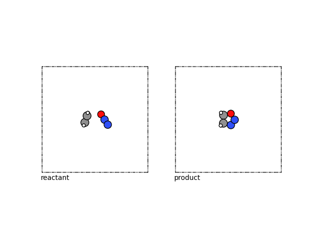
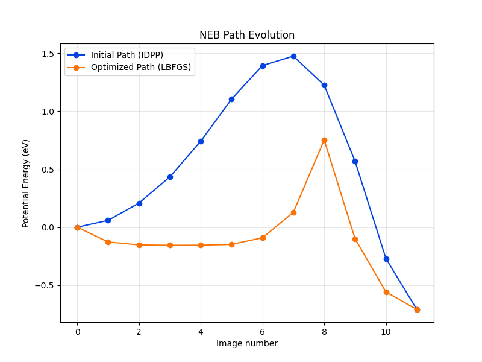
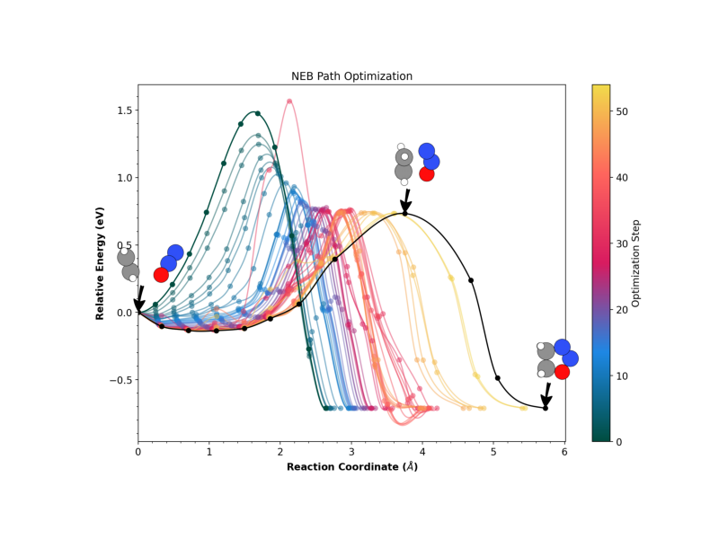
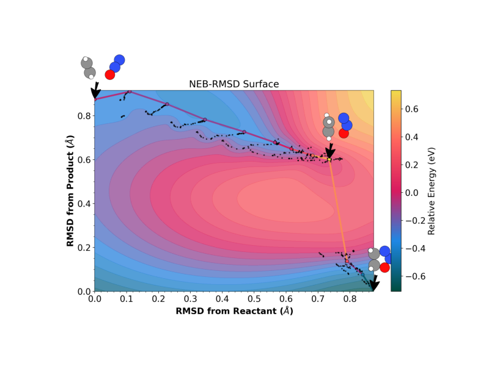
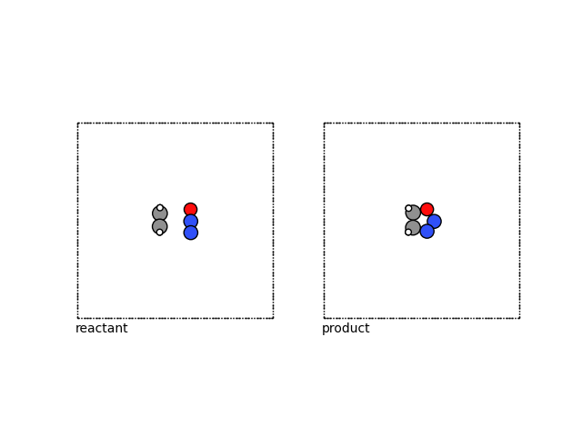
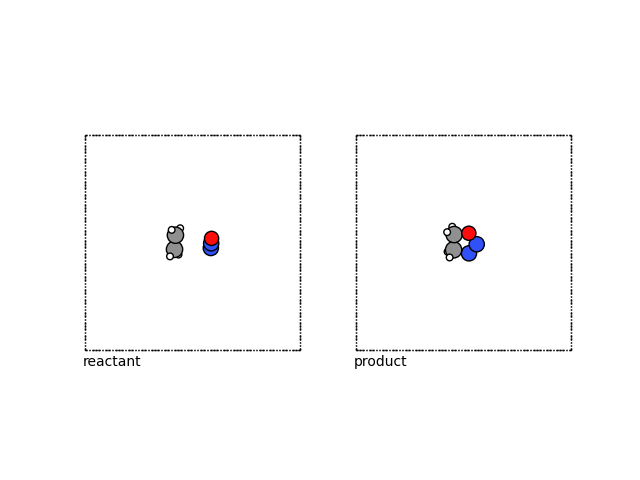

Note
Go to the end to download the full example code.
Finding Reaction Paths with EON and a Metatomic Potential¶
- Authors:
Rohit Goswami @HaoZeke, Hanna Tuerk @HannaTuerk, Arslan Mazitov @abmazitov, Michele Ceriotti @ceriottim
This example describes how to find the reaction pathway for oxadiazole formation from N₂O and ethylene. We will use the PET-MAD metatomic model to calculate the potential energy and forces.
The primary goal is to contrast a standard Nudged Elastic Band (NEB) calculation using the atomic simulation environment (ASE) with more sophisticated methods available in the EON package. For even a relatively simple reaction like this, a basic NEB implementation can struggle to converge or may time out. We will show how EON’s advanced features, such as energy-weighted springs and mixing in single-ended dimer search steps, can efficiently locate and refine the transition state along the path.
Our approach will be:
Set up the PET-MAD metatomic calculator.
Use ASE to generate an initial IDPP reaction path.
Illustrate the limitations of a standard NEB calculation in ASE.
Refine the path and locate the transition state saddle point using EON’s optimizers, including energy-weighted springs and the dimer method.
Visualize the final converged pathway.
Demonstrate endpoind relaxation with EON
Importing Required Packages¶
First, we import all the necessary python packages for this task.
By convention, all import
statements are at the top of the file.
import contextlib
import os
import shutil
import subprocess
import sys
from pathlib import Path
from typing import List, Optional, Union
import ase
import ase.io as aseio
import ira_mod
import matplotlib.image as mpimg
import matplotlib.pyplot as plt
import requests
from ase.mep import NEB
from ase.optimize import LBFGS
from ase.visualize import view
from ase.visualize.plot import plot_atoms
from metatomic.torch.ase_calculator import MetatomicCalculator
# sphinx_gallery_thumbnail_number = 4
Obtaining the Foundation Model - PET-MAD¶
PET-MAD is an instance of a point edge transformer model trained on
the diverse MAD dataset
which learns equivariance through data driven measures
instead of having equivariance baked in [1]. In turn, this enables
the PET model to have greater design space to learn over. Integration in
Python and the C++ EON client occurs through the metatomic software [2],
which in turn relies on the atomistic machine learning toolkit build
over metatensor. Essentially using any of the metatomic models involves
grabbing weights off of HuggingFace and loading them with
metatomic before running the
engine of choice.
repo_id = "lab-cosmo/pet-mad"
tag = "v1.0.2"
url_path = f"models/pet-mad-{tag}.ckpt"
fname = Path(url_path).name
url = f"https://huggingface.co/{repo_id}/resolve/{tag}/{url_path}"
if not Path(fname).exists():
response = requests.get(url)
if response.ok:
with open(fname, "wb") as f:
f.write(response.content)
print(f"Downloaded {fname} from tag {tag}.")
else:
print("Failed to download:", response.status_code)
else:
print(f"{fname} from tag {tag} already present.")
if not Path(fname.replace("ckpt", "pt")).exists():
subprocess.run(
[
"mtt",
"export",
"pet-mad-v1.0.2.ckpt", # noqa: E501
]
)
Downloaded pet-mad-v1.0.2.ckpt from tag v1.0.2.
Nudged Elastic Band (NEB)¶
Given two known configurations on a potential energy surface (PES), often one wishes to determine the path of highest probability between the two. Under the harmonic approximation to transition state theory, connecting the configurations (each point representing a full molecular structure) by a discrete set of images allows one to evolve the path under an optimization algorithm, and allows approximating the reaction to three states: the reactant, product, and transition state.
The location of this transition state (≈ the point with the highest energy along this path) determines the barrier height of the reaction. This saddle point can be found by transforming the second derivatives (Hessian) to step along the softest mode. However, an approximation which is free from explicitly finding this mode involves moving the highest image of a NEB path: the “climbing” image.
Mathematically, the saddle point has zero first derivatives and a single negative eigenvalue. The climbing image technique moves the highest energy image along the reversed NEB tangent force, avoiding the cost of full Hessian diagonalization used in single-ended methods [3].
Concretely, in this example, we will consider a reactant and product state, for oxadiazole formation, namely N₂O and ethylene.
reactant = aseio.read("data/min_reactant.con")
product = aseio.read("data/min_product.con")
We can visualize these structures using ASE.
fig, (ax1, ax2) = plt.subplots(1, 2)
plot_atoms(reactant, ax1, rotation=("-90x,0y,0z"))
plot_atoms(product, ax2, rotation=("-90x,0y,0z"))
ax1.text(0.3, -1, "reactant")
ax2.text(0.3, -1, "product")
ax1.set_axis_off()
ax2.set_axis_off()

Endpoint minimization¶
For finding reaction pathways, the endpoints should be minimized. We provide initial configurations which are already minimized, but in order to see how to relax endpoints with EON, please have a look at the end of this tutorial.
Initial path generation¶
To begin an NEB method, an initial path is required, the optimal construction of which still forms an active area of research. The simplest approximation to an initial path for NEB methods linearly interpolate between the two known configurations building on intuition developed from “drag coordinate” methods. This may break bonds or otherwise also unphysically pass atoms through each other, similar to the effect of incorrect permutations. To ameliorate this effect, the NEB algorithm is often started from the linear interpolation but then the path is optimized on a surrogate potential energy surface, commonly something cheap and analytic, like the IDPP (Image dependent pair potential, [5]) which provides a surface based on bond distances, and thus preventing atom-in-atom collisions.
Here we use the IDPP from ASE to setup the initial path. You can find more information about this method in the corresponding ASE tutorial or in the original IDPP publication by S. Smidstru et al. . A brief pedagogical discussion of the transition state methods may be found on the Rowan blog, though the software is proprietary there.
N_INTERMEDIATE_IMGS = 10
# total includes the endpoints
TOTAL_IMGS = N_INTERMEDIATE_IMGS + 2
images = [reactant]
images += [reactant.copy() for img in range(N_INTERMEDIATE_IMGS)]
images += [product]
neb = NEB(images)
neb.interpolate("idpp")
We don’t cover subtleties in setting the number of images, typically too many intermediate images may cause kinks but too few will be unable to resolve the tangent to any reasonable quality.
For EON, we write the initial path to a file called idppPath.dat.
output_dir = "path"
os.makedirs(output_dir, exist_ok=True)
output_files = [f"{output_dir}/{num:02d}.con" for num in range(TOTAL_IMGS)]
for outfile, img in zip(output_files, images):
ase.io.write(outfile, img)
print(f"Wrote {len(output_files)} IDPP images to '{output_dir}/'.")
summary_file_path = "idppPath.dat"
with open(summary_file_path, "w") as f:
for filepath in output_files:
abs_path = os.path.abspath(filepath)
f.write(f"{abs_path}\n")
print(f"Wrote absolute paths to '{summary_file_path}'.")
Wrote 12 IDPP images to 'path/'.
Wrote absolute paths to 'idppPath.dat'.
Running NEBs¶
We will now consider actually running the Nudged Elastic Band with different codes.
ASE and Metatomic¶
We first consider using metatomic with the ASE calculator.
# define the calculator
def mk_mta_calc():
return MetatomicCalculator(
"pet-mad-v1.0.2.pt",
device="cpu",
non_conservative=False,
uncertainty_threshold=0.001,
)
# set calculators for images
ipath = [reactant] + [reactant.copy() for img in range(10)] + [product]
for img in ipath:
img.calc = mk_mta_calc()
print(img.calc._model.capabilities().outputs)
neb = NEB(ipath, climb=True, k=5, method="improvedtangent")
neb.interpolate("idpp")
# store initial path guess for plotting
initial_energies = [img.get_potential_energy() for img in ipath]
# setup the NEB clalculation
optimizer = LBFGS(neb, trajectory="A2B.traj", logfile="opt.log")
conv = optimizer.run(fmax=0.01, steps=100)
print("Check if calculation has converged:", conv)
if conv:
print(neb)
final_energies = [i.get_potential_energy() for i in ipath]
# Plot initial and final path
plt.figure(figsize=(8, 6))
# Initial Path (Blue)
plt.plot(
initial_energies - initial_energies[0],
"o-",
label="Initial Path (IDPP)",
color="xkcd:blue",
)
# Final Path (Orange)
plt.plot(
final_energies - initial_energies[0],
"o-",
label="Optimized Path (LBFGS)",
color="xkcd:orange",
)
# Metadata
plt.xlabel("Image number")
plt.ylabel("Potential Energy (eV)")
plt.legend()
plt.grid(True, alpha=0.3)
plt.title("NEB Path Evolution")
plt.show()

{'energy': <torch.ScriptObject object at 0x55ac73b134a0>, 'energy_ensemble': <torch.ScriptObject object at 0x55ac71613c20>, 'energy_uncertainty': <torch.ScriptObject object at 0x55ac716139f0>, 'features': <torch.ScriptObject object at 0x55ac71914d20>, 'mtt::aux::energy_last_layer_features': <torch.ScriptObject object at 0x55ac73b5dab0>}
/home/runner/work/atomistic-cookbook/atomistic-cookbook/.nox/eon-pet-neb/lib/python3.13/site-packages/ase/calculators/calculator.py:519: UserWarning: Some of the atomic energy uncertainties are larger than the threshold of 0.001 eV. The prediction is above the threshold for atoms [0 1 2 3 4 5 6 7 8].
self.calculate(atoms, [name], system_changes)
Check if calculation has converged: False
In the 100 NEB steps we took, the structure did unfortunately not converge. The metatomic calculator for PET-MAD v1.0.2 provides LLPR based energy uncertainties. As we obtain a warning that the uncertainty of the path structure sampled is very high, we stop after 100 steps. The ASE algorithm with LBFGS optimizer does not find good intermediate structures and does not converge at all. Our test showed that the FIRE optimizer works better in this context, but still takes over 500 steps to converge, and since second order methods are faster, we consider the LBFGS routine throughout this notebook.
We thus want to look at a different code, which manages to compute a NEB for this simple system more efficiently.
EON and Metatomic¶
EON has two improvements to accurately locate the saddle point.
Energy weighting for improving tangent resolution near the climbing image
The Hybrid MMF-NEB-CI which involves iteratively switching to the dimer method for faster convergence by the climbing image.
To use EON, we setup a function that writes the desired EON input for us and
runs the eonclient binary. Since we are in a notebook environment, we will
use several abstractions over raw subprocess calls. In practice, writing
and using EON is much simpler.
def write_neb_eon_config(
run_dir: Path, model_path: Path, ninterm: int = N_INTERMEDIATE_IMGS
):
"""
Writes the config.ini file for an EON NEB job,
using the user's provided template.
"""
config_content = f"""[Main]
job=nudged_elastic_band
random_seed = 706253457
[Potential]
potential = Metatomic
[Metatomic]
model_path = {Path(str(model_path).replace("ckpt", "pt")).absolute()}
[Nudged Elastic Band]
images={ninterm}
energy_weighted=true
ew_ksp_min = 0.972
ew_ksp_max = 9.72
initial_path_in = idppPath.dat
minimize_endpoints = false
climbing_image_method = true
climbing_image_converged_only = true
ci_after = 1.5
ci_mmf = true
ci_mmf_after = 0.5
ci_mmf_nsteps = 20
# for PET-MAD 1.1
# ci_after = 0.5
# ci_mmf_nsteps = 10
[Optimizer]
max_iterations = 100
opt_method = lbfgs
max_move = 0.1
converged_force = 0.01
[Debug]
write_movies=true
"""
config_path = run_dir / "config.ini"
with open(config_path, "w") as f:
f.write(config_content)
print(f"Wrote EON NEB config to '{config_path}'")
Which now let’s us write out the final triplet of reactant, product, and configuration of the EON-NEB.
write_neb_eon_config(Path("."), Path(fname).absolute())
aseio.write("reactant.con", reactant)
aseio.write("product.con", product)
Wrote EON NEB config to 'config.ini'
Now we can finally define helpers for easier visualization.
def _run_command_live(
cmd: Union[str, List[str]],
*,
check: bool = True,
timeout: Optional[float] = None,
capture: bool = False,
encoding: str = "utf-8",
) -> subprocess.CompletedProcess:
"""
Internal: run command and stream stdout/stderr live to current stdout.
If capture=True, also collect combined output and return it
in CompletedProcess.stdout.
"""
shell = isinstance(cmd, str)
cmd_str = cmd if shell else cmd[0]
# If list form, ensure program exists before trying to run
if not shell and shutil.which(cmd_str) is None:
raise FileNotFoundError(f"{cmd_str!r} is not on PATH")
# Start the process
# We combine stderr into stdout so we only have one stream to read
proc = subprocess.Popen(
cmd,
stdout=subprocess.PIPE,
stderr=subprocess.STDOUT,
text=True,
encoding=encoding,
shell=shell,
bufsize=1, # Line buffered
)
collected = [] if capture else None
try:
assert proc.stdout is not None
for line in proc.stdout:
# Stream into notebook or terminal live
print(line, end="")
sys.stdout.flush()
if capture:
collected.append(line)
# Wait for the process to actually exit after stream closes
returncode = proc.wait(timeout=timeout)
except subprocess.TimeoutExpired:
proc.kill()
proc.wait()
raise
except KeyboardInterrupt:
proc.kill()
proc.wait()
raise
finally:
if proc.stdout:
proc.stdout.close()
if check and returncode != 0:
output_str = "".join(collected) if capture else ""
raise subprocess.CalledProcessError(returncode, cmd, output=output_str)
return subprocess.CompletedProcess(
cmd, returncode, stdout="".join(collected) if capture else None
)
def run_command_or_exit(
cmd: Union[str, List[str]], capture: bool = False, timeout: Optional[float] = 300
) -> subprocess.CompletedProcess:
"""
Helper wrapper to run commands, stream output, and exit script/notebook
cleanly on failure so sphinx-gallery sees the errors appropriately.
"""
try:
return _run_command_live(cmd, check=True, capture=capture, timeout=timeout)
except FileNotFoundError as e:
print(f"Executable not found: {e}", file=sys.stderr)
sys.exit(2)
except subprocess.CalledProcessError as e:
print(f"Command failed with exit code {e.returncode}", file=sys.stderr)
sys.exit(e.returncode)
except subprocess.TimeoutExpired:
print("Command timed out", file=sys.stderr)
sys.exit(124)
Run the main C++ client¶
This runs ‘eonclient’ and streams output live. If it fails, the notebook execution stops here.
run_command_or_exit(["eonclient"], capture=True, timeout=300)
EON Client
VERSION: f01406f
BUILD DATE: Tue Dec 02 01:53:51 AM GMT 2025
OS: linux
Arch: x86_64
Hostname: runnervmh13bl
PID: 2459
DIR: /home/runner/work/atomistic-cookbook/atomistic-cookbook/examples/eon-pet-neb
Loading parameter file config.ini
* [Main] job: nudged_elastic_band
* [Main] random_seed: 706253457
* [Potential] potential: Metatomic
* [Debug] write_movies: true
* [Optimizer] opt_method: lbfgs
* [Optimizer] converged_force: 0.01
* [Optimizer] max_iterations: 100
* [Optimizer] max_move: 0.1
* [Metatomic] model_path: /home/runner/work/atomistic-cookbook/atomistic-cookbook/examples/eon-pet-neb/pet-mad-v1.0.2.pt
* [Nudged Elastic Band] images: 10
* [Nudged Elastic Band] climbing_image_method: true
* [Nudged Elastic Band] climbing_image_converged_only: true
* [Nudged Elastic Band] energy_weighted: true
* [Nudged Elastic Band] ew_ksp_min: 0.972
* [Nudged Elastic Band] ew_ksp_max: 9.72
* [Nudged Elastic Band] initial_path_in: idppPath.dat
* [Nudged Elastic Band] minimize_endpoints: false
* [Nudged Elastic Band] ci_after: 1.5
* [Nudged Elastic Band] ci_mmf: true
* [Nudged Elastic Band] ci_mmf_after: 0.5
* [Nudged Elastic Band] ci_mmf_nsteps: 20
nebMinimEP == false: not minimizing endpoints.
Nudged elastic band calculation started.
iteration step size ||Force|| max image max energy
---------------------------------------------------------------
1 0.0000e+00 6.4530e+00 7 1.476
2 2.7135e-02 3.4313e+00 7 1.313
3 2.3174e-02 2.9734e+00 7 1.246
4 7.9660e-02 4.1151e+00 7 1.144
5 4.2120e-02 3.4504e+00 7 1.055
6 1.3124e-02 2.5217e+00 8 1.027
7 4.3086e-02 2.1786e+00 8 1.007
8 6.5063e-02 2.2960e+00 8 0.9603
9 7.1184e-02 2.1860e+00 8 0.9309
10 1.3804e-02 9.2784e-01 8 0.9
11 1.0315e-02 9.7959e-01 8 0.8936
12 1.8931e-02 1.3642e+00 8 0.8813
13 5.1167e-02 1.7397e+00 8 0.8499
14 3.3132e-02 1.0736e+00 8 0.8264
15 5.3965e-03 8.5656e-01 8 0.8209
16 1.4954e-02 9.7204e-01 8 0.8166
17 1.7564e-02 1.0940e+00 8 0.8065
18 4.1745e-02 1.0263e+00 8 0.7854
19 6.1644e-02 8.6576e-01 8 0.7693
20 2.4071e-02 6.6968e-01 8 0.7669
21 1.3170e-02 6.1145e-01 8 0.7647
22 2.9896e-02 5.7232e-01 8 0.7647
23 4.7545e-02 8.4015e-01 8 0.7684
24 4.2006e-02 1.9055e+00 8 0.7763
25 2.7546e-02 7.0410e-01 8 0.7605
26 8.7187e-03 4.6690e-01 8 0.7592
Saddle point search started from reactant with energy -53.27392578125 eV.
[Dimer] Step Step Size Delta E ||Force|| Curvature Torque Angle Rots
[IDimerRot] ----- --------- ---------- ------------------ -17.7512 3.803 2.39 1
[Dimer] 1 0.0178046 -0.0014 8.79835e-01 -17.7512 3.803 2.393 1
[IDimerRot] ----- --------- ---------- ------------------ -17.8729 6.011 ------ ----
[Dimer] 2 0.0157025 -0.0056 4.34085e-01 -17.8729 3.005 3.641 0
[IDimerRot] ----- --------- ---------- ------------------ -17.7679 3.556 2.03 1
[Dimer] 3 0.0155158 -0.0086 2.08324e-01 -17.7679 3.556 2.026 1
[IDimerRot] ----- --------- ---------- ------------------ -17.6124 4.783 ------ ----
[Dimer] 4 0.0087097 -0.0096 2.02936e-01 -17.6124 2.391 3.529 0
[IDimerRot] ----- --------- ---------- ------------------ -17.6138 4.784 ------ ----
[Dimer] 5 0.0193009 -0.0097 3.18182e-01 -17.6138 2.392 3.866 0
[IDimerRot] ----- --------- ---------- ------------------ -18.1694 4.646 ------ ----
[Dimer] 6 0.0057401 -0.0100 1.46070e-01 -18.1694 2.323 3.643 0
[IDimerRot] ----- --------- ---------- ------------------ -17.8306 4.466 ------ ----
[Dimer] 7 0.0034083 -0.0101 4.33832e-02 -17.8306 2.233 3.569 0
[IDimerRot] ----- --------- ---------- ------------------ -17.9179 4.446 ------ ----
[Dimer] 8 0.0008058 -0.0102 3.45555e-02 -17.9179 2.223 3.536 0
[IDimerRot] ----- --------- ---------- ------------------ -17.9202 4.421 ------ ----
[Dimer] 9 0.0025660 -0.0102 4.82567e-02 -17.9202 2.211 3.516 0
[IDimerRot] ----- --------- ---------- ------------------ -17.8905 4.433 ------ ----
[Dimer] 10 0.0035308 -0.0103 5.54824e-02 -17.8905 2.216 3.531 0
[IDimerRot] ----- --------- ---------- ------------------ -17.8450 4.403 ------ ----
[Dimer] 11 0.0075213 -0.0104 8.18914e-02 -17.8450 2.202 3.517 0
[IDimerRot] ----- --------- ---------- ------------------ -17.7820 4.203 ------ ----
[Dimer] 12 0.0038211 -0.0104 6.85993e-02 -17.7820 2.102 3.370 0
[IDimerRot] ----- --------- ---------- ------------------ -17.7311 4.147 ------ ----
[Dimer] 13 0.0019144 -0.0104 1.89834e-02 -17.7311 2.074 3.335 0
[IDimerRot] ----- --------- ---------- ------------------ -17.7410 4.170 ------ ----
[Dimer] 14 0.0004003 -0.0104 1.46997e-02 -17.7410 2.085 3.351 0
[IDimerRot] ----- --------- ---------- ------------------ -17.7295 4.172 ------ ----
[Dimer] 15 0.0015144 -0.0104 2.74788e-02 -17.7295 2.086 3.355 0
[IDimerRot] ----- --------- ---------- ------------------ -17.6951 4.135 ------ ----
[Dimer] 16 0.0026929 -0.0105 4.38397e-02 -17.6951 2.067 3.332 0
[IDimerRot] ----- --------- ---------- ------------------ -17.6557 4.088 ------ ----
[Dimer] 17 0.0068688 -0.0105 6.21680e-02 -17.6557 2.044 3.302 0
[IDimerRot] ----- --------- ---------- ------------------ -17.5873 3.988 ------ ----
[Dimer] 18 0.0112719 -0.0106 6.63681e-02 -17.5873 1.994 3.234 0
[IDimerRot] ----- --------- ---------- ------------------ -17.5247 3.890 ------ ----
[Dimer] 19 0.0297361 -0.0105 2.02008e-01 -17.5247 1.945 3.166 0
[IDimerRot] ----- --------- ---------- ------------------ -17.4037 3.782 ------ ----
[Dimer] 20 0.0026659 -0.0107 5.63019e-02 -17.4037 1.891 3.101 0
27 4.9043e-02 5.2114e-02 8 0.7485
Saddle point search started from reactant with energy -53.2846565246582 eV.
[Dimer] Step Step Size Delta E ||Force|| Curvature Torque Angle Rots
[IDimerRot] ----- --------- ---------- ------------------ -17.4871 3.786 2.27 1
[Dimer] 1 0.0005127 -0.0000 4.34820e-02 -17.4871 3.786 2.272 1
[IDimerRot] ----- --------- ---------- ------------------ -17.4687 3.638 ------ ----
[Dimer] 2 0.0003413 -0.0000 4.05851e-02 -17.4687 1.819 2.671 0
[IDimerRot] ----- --------- ---------- ------------------ -17.4708 3.637 ------ ----
[Dimer] 3 0.0061549 -0.0001 4.44836e-02 -17.4708 1.818 2.971 0
[IDimerRot] ----- --------- ---------- ------------------ -17.5727 3.639 ------ ----
[Dimer] 4 0.0047029 -0.0002 6.36363e-02 -17.5727 1.819 2.956 0
[IDimerRot] ----- --------- ---------- ------------------ -17.6454 3.852 ------ ----
[Dimer] 5 0.0008763 -0.0002 2.91937e-02 -17.6454 1.926 3.114 0
[IDimerRot] ----- --------- ---------- ------------------ -17.6897 3.873 ------ ----
[Dimer] 6 0.0004562 -0.0002 2.35897e-02 -17.6897 1.936 3.124 0
[IDimerRot] ----- --------- ---------- ------------------ -17.6898 3.893 ------ ----
[Dimer] 7 0.0033588 -0.0002 2.71315e-02 -17.6898 1.946 3.139 0
[IDimerRot] ----- --------- ---------- ------------------ -17.7111 4.110 ------ ----
[Dimer] 8 0.0029319 -0.0003 2.76302e-02 -17.7111 2.055 3.309 0
[IDimerRot] ----- --------- ---------- ------------------ -17.7487 4.134 ------ ----
[Dimer] 9 0.0078874 -0.0003 6.94691e-02 -17.7487 2.067 3.321 0
[IDimerRot] ----- --------- ---------- ------------------ -17.8316 4.171 ------ ----
[Dimer] 10 0.0011602 -0.0003 2.16036e-02 -17.8316 2.085 3.335 0
[IDimerRot] ----- --------- ---------- ------------------ -17.8220 4.106 ------ ----
[Dimer] 11 0.0007205 -0.0003 2.21163e-02 -17.8220 2.053 3.285 0
[IDimerRot] ----- --------- ---------- ------------------ -17.8169 4.066 ------ ----
[Dimer] 12 0.0043725 -0.0004 3.99325e-02 -17.8169 2.033 3.255 0
[IDimerRot] ----- --------- ---------- ------------------ -17.8053 3.918 ------ ----
[Dimer] 13 0.0114389 -0.0005 6.38670e-02 -17.8053 1.959 3.140 0
[IDimerRot] ----- --------- ---------- ------------------ -17.8034 3.839 ------ ----
[Dimer] 14 0.0282856 -0.0007 8.76413e-02 -17.8034 1.919 3.077 0
[IDimerRot] ----- --------- ---------- ------------------ -17.7838 3.883 ------ ----
[Dimer] 15 0.0686534 -0.0005 2.84528e-01 -17.7838 1.942 3.116 0
[IDimerRot] ----- --------- ---------- ------------------ -17.9273 4.563 ------ ----
[Dimer] 16 0.0115216 -0.0009 6.92988e-02 -17.9273 2.282 3.627 0
[IDimerRot] ----- --------- ---------- ------------------ -17.8032 4.403 ------ ----
[Dimer] 17 0.0091266 -0.0010 4.50277e-02 -17.8032 2.202 3.525 0
[IDimerRot] ----- --------- ---------- ------------------ -17.7827 4.590 ------ ----
[Dimer] 18 0.0335518 -0.0011 7.21157e-02 -17.7827 2.295 3.677 0
[IDimerRot] ----- --------- ---------- ------------------ -17.7484 5.111 ------ ----
[Dimer] 19 0.0268576 -0.0012 9.61077e-02 -17.7484 2.555 4.097 0
[IDimerRot] ----- --------- ---------- ------------------ -17.7181 5.434 ------ ----
[Dimer] 20 0.0818767 -0.0015 1.40388e-01 -17.7181 2.717 4.359 0
28 1.4232e-01 7.6391e-01 8 0.749
29 4.9818e-02 7.1160e-01 8 0.749
30 4.6377e-02 2.9392e-01 8 0.7471
Saddle point search started from reactant with energy -53.2860221862793 eV.
[Dimer] Step Step Size Delta E ||Force|| Curvature Torque Angle Rots
[IDimerRot] ----- --------- ---------- ------------------ -17.3716 4.968 6.59 1
[IDimerRot] ----- --------- ---------- ------------------ -17.7581 5.080 6.23 2
[IDimerRot] ----- --------- ---------- ------------------ -17.7590 5.689 ------ ----
[Dimer] 1 0.0031321 -0.0004 1.10832e-01 -17.7590 2.844 3.846 2
[IDimerRot] ----- --------- ---------- ------------------ -17.6957 6.071 ------ ----
[Dimer] 2 0.0010946 -0.0005 6.89684e-02 -17.6957 3.036 4.867 0
[IDimerRot] ----- --------- ---------- ------------------ -17.7196 5.778 ------ ----
[Dimer] 3 0.0003741 -0.0005 5.17771e-02 -17.7196 2.889 4.630 0
[IDimerRot] ----- --------- ---------- ------------------ -17.7207 5.779 ------ ----
[Dimer] 4 0.0027169 -0.0005 6.03354e-02 -17.7207 2.889 4.630 0
[IDimerRot] ----- --------- ---------- ------------------ -17.7277 5.839 ------ ----
[Dimer] 5 0.0022768 -0.0006 6.65229e-02 -17.7277 2.919 4.676 0
[IDimerRot] ----- --------- ---------- ------------------ -17.7176 5.847 ------ ----
[Dimer] 6 0.0080236 -0.0009 9.32855e-02 -17.7176 2.924 4.685 0
[IDimerRot] ----- --------- ---------- ------------------ -17.6749 5.926 ------ ----
[Dimer] 7 0.0186753 -0.0013 1.46784e-01 -17.6749 2.963 4.759 0
[IDimerRot] ----- --------- ---------- ------------------ -17.5503 3.140 1.09 1
[Dimer] 8 0.0128771 -0.0015 1.05794e-01 -17.5503 3.140 1.087 1
[IDimerRot] ----- --------- ---------- ------------------ -17.6237 2.344 ------ ----
[Dimer] 9 0.0179658 -0.0016 7.79460e-02 -17.6237 1.172 1.758 0
[IDimerRot] ----- --------- ---------- ------------------ -17.6273 2.775 ------ ----
[Dimer] 10 0.0055198 -0.0016 5.99685e-02 -17.6273 1.388 2.251 0
[IDimerRot] ----- --------- ---------- ------------------ -17.7193 3.072 ------ ----
[Dimer] 11 0.0027838 -0.0017 3.06384e-02 -17.7193 1.536 2.477 0
[IDimerRot] ----- --------- ---------- ------------------ -17.7015 3.082 ------ ----
[Dimer] 12 0.0013068 -0.0017 3.06212e-02 -17.7015 1.541 2.487 0
[IDimerRot] ----- --------- ---------- ------------------ -17.7184 2.998 ------ ----
[Dimer] 13 0.0038162 -0.0017 3.64504e-02 -17.7184 1.499 2.418 0
[IDimerRot] ----- --------- ---------- ------------------ -17.7099 2.896 ------ ----
[Dimer] 14 0.0065886 -0.0018 5.24056e-02 -17.7099 1.448 2.337 0
[IDimerRot] ----- --------- ---------- ------------------ -17.7037 2.865 ------ ----
[Dimer] 15 0.0028078 -0.0018 2.63740e-02 -17.7037 1.433 2.313 0
[IDimerRot] ----- --------- ---------- ------------------ -17.6848 2.854 ------ ----
[Dimer] 16 0.0026729 -0.0018 2.29141e-02 -17.6848 1.427 2.306 0
[IDimerRot] ----- --------- ---------- ------------------ -17.6748 2.909 ------ ----
[Dimer] 17 0.0016437 -0.0018 2.13045e-02 -17.6748 1.454 2.352 0
[IDimerRot] ----- --------- ---------- ------------------ -17.6871 2.950 ------ ----
[Dimer] 18 0.0044167 -0.0019 2.09104e-02 -17.6871 1.475 2.384 0
[IDimerRot] ----- --------- ---------- ------------------ -17.7056 2.975 ------ ----
[Dimer] 19 0.0149009 -0.0020 4.18648e-02 -17.7056 1.487 2.401 0
[IDimerRot] ----- --------- ---------- ------------------ -17.7967 2.980 ------ ----
[Dimer] 20 0.0310730 -0.0021 8.33810e-02 -17.7967 1.490 2.393 0
31 1.7895e-01 9.4575e-01 8 0.751
32 8.5098e-02 7.5422e-01 8 0.7552
33 1.0000e-01 2.8352e+01 6 1.567
34 7.8474e-02 3.7448e+00 8 0.7516
35 8.8521e-03 2.5901e+00 8 0.7514
36 7.5344e-03 2.0248e+00 8 0.7512
37 3.3959e-02 5.2099e+00 8 0.7506
38 5.7010e-02 5.3489e+00 8 0.7501
39 9.5236e-02 6.5746e+00 8 0.751
40 2.2870e-02 1.7223e+00 8 0.7488
41 1.5286e-02 1.7938e+00 8 0.7477
42 8.9785e-02 2.3441e+00 8 0.7337
43 3.1321e-02 1.1328e+00 8 0.7363
44 2.3842e-02 6.5604e-01 8 0.7361
45 7.5027e-03 6.2594e-01 8 0.737
46 2.9942e-02 4.2354e-01 8 0.7433
Saddle point search started from reactant with energy -53.289825439453125 eV.
[Dimer] Step Step Size Delta E ||Force|| Curvature Torque Angle Rots
[IDimerRot] ----- --------- ---------- ------------------ -17.4693 6.587 6.85 1
[IDimerRot] ----- --------- ---------- ------------------ -17.6018 4.166 2.33 2
[Dimer] 1 0.0219960 0.0037 2.62814e-01 -17.6018 4.166 2.327 2
[IDimerRot] ----- --------- ---------- ------------------ -17.1715 9.328 ------ ----
[Dimer] 2 0.0115232 0.0051 7.71530e-01 -17.1715 4.664 2.905 0
[IDimerRot] ----- --------- ---------- ------------------ -17.8410 6.068 4.51 1
[Dimer] 3 0.0073039 0.0033 9.09976e-02 -17.8410 6.068 4.507 1
[IDimerRot] ----- --------- ---------- ------------------ -17.6353 6.610 ------ ----
[Dimer] 4 0.0007681 0.0032 7.62750e-02 -17.6353 3.305 3.013 0
[IDimerRot] ----- --------- ---------- ------------------ -17.7583 3.330 1.61 1
[Dimer] 5 0.0059978 0.0029 9.59389e-02 -17.7583 3.330 1.613 1
[IDimerRot] ----- --------- ---------- ------------------ -18.0089 1.953 ------ ----
[Dimer] 6 0.0093118 0.0025 1.62236e-01 -18.0089 0.977 1.551 0
[IDimerRot] ----- --------- ---------- ------------------ -18.1418 2.275 ------ ----
[Dimer] 7 0.0201104 0.0018 1.96033e-01 -18.1418 1.138 1.794 0
[IDimerRot] ----- --------- ---------- ------------------ -18.3105 2.735 ------ ----
[Dimer] 8 0.0514068 0.0011 4.47612e-01 -18.3105 1.367 2.136 0
[IDimerRot] ----- --------- ---------- ------------------ -17.8743 3.471 ------ ----
[Dimer] 9 0.0146272 0.0002 2.16764e-01 -17.8743 1.735 2.773 0
[IDimerRot] ----- --------- ---------- ------------------ -17.5707 3.309 ------ ----
[Dimer] 10 0.0037953 -0.0001 6.47496e-02 -17.5707 1.654 2.689 0
[IDimerRot] ----- --------- ---------- ------------------ -17.5508 3.170 ------ ----
[Dimer] 11 0.0040272 -0.0002 4.92807e-02 -17.5508 1.585 2.580 0
[IDimerRot] ----- --------- ---------- ------------------ -17.4534 3.243 ------ ----
[Dimer] 12 0.0033405 -0.0002 5.55553e-02 -17.4534 1.622 2.654 0
[IDimerRot] ----- --------- ---------- ------------------ -17.4177 3.293 ------ ----
[Dimer] 13 0.0128596 -0.0004 8.12276e-02 -17.4177 1.646 2.700 0
[IDimerRot] ----- --------- ---------- ------------------ -17.4311 3.416 ------ ----
[Dimer] 14 0.0125362 -0.0004 1.76853e-01 -17.4311 1.708 2.798 0
[IDimerRot] ----- --------- ---------- ------------------ -17.6191 3.346 ------ ----
[Dimer] 15 0.0023153 -0.0006 4.09048e-02 -17.6191 1.673 2.712 0
[IDimerRot] ----- --------- ---------- ------------------ -17.6147 3.331 ------ ----
[Dimer] 16 0.0026211 -0.0006 2.40856e-02 -17.6147 1.666 2.701 0
[IDimerRot] ----- --------- ---------- ------------------ -17.6643 3.234 ------ ----
[Dimer] 17 0.0021270 -0.0006 2.47952e-02 -17.6643 1.617 2.615 0
[IDimerRot] ----- --------- ---------- ------------------ -17.7261 3.152 ------ ----
[Dimer] 18 0.0024761 -0.0007 3.28808e-02 -17.7261 1.576 2.540 0
[IDimerRot] ----- --------- ---------- ------------------ -17.7712 3.088 ------ ----
[Dimer] 19 0.0046880 -0.0007 3.94285e-02 -17.7712 1.544 2.483 0
[IDimerRot] ----- --------- ---------- ------------------ -17.8021 3.066 ------ ----
[Dimer] 20 0.0043137 -0.0007 2.47249e-02 -17.8021 1.533 2.461 0
47 6.8913e-02 1.7965e-02 8 0.7426
Saddle point search started from reactant with energy -53.290557861328125 eV.
[Dimer] Step Step Size Delta E ||Force|| Curvature Torque Angle Rots
[IDimerRot] ----- --------- ---------- ------------------ -17.5902 5.706 3.50 1
[Dimer] 1 0.0006685 -0.0000 3.31264e-02 -17.5902 5.706 3.495 1
[IDimerRot] ----- --------- ---------- ------------------ -17.7070 3.885 3.01 1
[Dimer] 2 0.0005970 -0.0000 2.40422e-02 -17.7070 3.885 3.013 1
[IDimerRot] ----- --------- ---------- ------------------ -17.6782 4.424 ------ ----
[Dimer] 3 0.0017293 -0.0000 2.14197e-02 -17.6782 2.212 3.052 0
[IDimerRot] ----- --------- ---------- ------------------ -17.6464 4.397 ------ ----
[Dimer] 4 0.0014732 -0.0000 2.81210e-02 -17.6464 2.199 3.551 0
[IDimerRot] ----- --------- ---------- ------------------ -17.6419 4.357 ------ ----
[Dimer] 5 0.0040870 -0.0001 2.90654e-02 -17.6419 2.178 3.519 0
[IDimerRot] ----- --------- ---------- ------------------ -17.6749 4.254 ------ ----
[Dimer] 6 0.0061896 -0.0001 4.16741e-02 -17.6749 2.127 3.431 0
[IDimerRot] ----- --------- ---------- ------------------ -17.6421 4.237 ------ ----
[Dimer] 7 0.0122481 -0.0001 7.19990e-02 -17.6421 2.119 3.424 0
[IDimerRot] ----- --------- ---------- ------------------ -17.6209 4.194 ------ ----
[Dimer] 8 0.0024130 -0.0002 3.66472e-02 -17.6209 2.097 3.393 0
[IDimerRot] ----- --------- ---------- ------------------ -17.6111 4.259 ------ ----
[Dimer] 9 0.0054394 -0.0002 4.99342e-02 -17.6111 2.129 3.447 0
[IDimerRot] ----- --------- ---------- ------------------ -17.5905 4.338 ------ ----
[Dimer] 10 0.0132881 -0.0003 7.88738e-02 -17.5905 2.169 3.515 0
[IDimerRot] ----- --------- ---------- ------------------ -17.5442 4.451 ------ ----
[Dimer] 11 0.0306400 -0.0005 9.92274e-02 -17.5442 2.225 3.615 0
[IDimerRot] ----- --------- ---------- ------------------ -17.4684 4.676 ------ ----
[Dimer] 12 0.0594234 -0.0008 1.29446e-01 -17.4684 2.338 3.812 0
[IDimerRot] ----- --------- ---------- ------------------ -17.3641 5.089 ------ ----
[Dimer] 13 0.1209579 -0.0011 1.65728e-01 -17.3641 2.545 4.169 0
[IDimerRot] ----- --------- ---------- ------------------ -17.4063 6.047 ------ ----
[Dimer] 14 0.0104605 -0.0015 8.43923e-02 -17.4063 3.024 4.927 0
[IDimerRot] ----- --------- ---------- ------------------ -17.3385 6.114 ------ ----
[Dimer] 15 0.0488951 -0.0020 1.09099e-01 -17.3385 3.057 5.000 0
[IDimerRot] ----- --------- ---------- ------------------ -17.4308 3.236 1.73 1
[Dimer] 16 0.0593018 -0.0024 1.42625e-01 -17.4308 3.236 1.734 1
[IDimerRot] ----- --------- ---------- ------------------ -17.5292 2.863 ------ ----
[Dimer] 17 0.1259017 -0.0026 2.98154e-01 -17.5292 1.431 2.265 0
[IDimerRot] ----- --------- ---------- ------------------ -17.8338 3.737 ------ ----
[Dimer] 18 0.0415562 -0.0028 2.52775e-01 -17.8338 1.868 2.990 0
[IDimerRot] ----- --------- ---------- ------------------ -17.9512 3.307 ------ ----
[Dimer] 19 0.1050787 0.0011 8.59055e-01 -17.9512 1.653 2.631 0
[IDimerRot] ----- --------- ---------- ------------------ -17.6617 4.558 ------ ----
[Dimer] 20 0.0917588 -0.0034 6.01745e-02 -17.6617 2.279 3.677 0
48 2.2832e-01 5.7746e-02 8 0.7392
Saddle point search started from reactant with energy -53.29397201538086 eV.
[Dimer] Step Step Size Delta E ||Force|| Curvature Torque Angle Rots
[IDimerRot] ----- --------- ---------- ------------------ -17.0167 7.293 7.20 1
[IDimerRot] ----- --------- ---------- ------------------ -17.5230 5.982 6.24 2
[IDimerRot] ----- --------- ---------- ------------------ -17.7590 4.802 3.97 3
[Dimer] 1 0.0036387 -0.0001 1.20602e-01 -17.7590 4.802 3.966 3
[IDimerRot] ----- --------- ---------- ------------------ -17.7827 3.840 ------ ----
[Dimer] 2 0.0032839 -0.0002 9.25504e-02 -17.7827 1.920 2.571 0
[IDimerRot] ----- --------- ---------- ------------------ -17.7464 3.666 ------ ----
[Dimer] 3 0.0076816 -0.0004 5.60670e-02 -17.7464 1.833 2.949 0
[IDimerRot] ----- --------- ---------- ------------------ -17.6853 3.452 ------ ----
[Dimer] 4 0.0035989 -0.0005 8.03818e-02 -17.6853 1.726 2.787 0
[IDimerRot] ----- --------- ---------- ------------------ -17.7191 3.432 ------ ----
[Dimer] 5 0.0030786 -0.0005 6.08589e-02 -17.7191 1.716 2.766 0
[IDimerRot] ----- --------- ---------- ------------------ -17.6795 3.475 ------ ----
[Dimer] 6 0.0080080 -0.0006 5.35549e-02 -17.6795 1.737 2.806 0
[IDimerRot] ----- --------- ---------- ------------------ -17.6156 3.607 ------ ----
[Dimer] 7 0.0052967 -0.0007 9.44385e-02 -17.6156 1.803 2.922 0
[IDimerRot] ----- --------- ---------- ------------------ -17.5763 3.646 ------ ----
[Dimer] 8 0.0010428 -0.0007 5.71229e-02 -17.5763 1.823 2.961 0
[IDimerRot] ----- --------- ---------- ------------------ -17.6106 3.665 ------ ----
[Dimer] 9 0.0056850 -0.0009 4.59927e-02 -17.6106 1.833 2.971 0
[IDimerRot] ----- --------- ---------- ------------------ -17.6987 3.691 ------ ----
[Dimer] 10 0.0065604 -0.0009 5.21541e-02 -17.6987 1.845 2.976 0
[IDimerRot] ----- --------- ---------- ------------------ -17.7358 3.712 ------ ----
[Dimer] 11 0.0116009 -0.0010 5.20240e-02 -17.7358 1.856 2.987 0
[IDimerRot] ----- --------- ---------- ------------------ -17.6894 3.856 ------ ----
[Dimer] 12 0.0144874 -0.0011 4.20614e-02 -17.6894 1.928 3.111 0
[IDimerRot] ----- --------- ---------- ------------------ -17.7817 3.760 ------ ----
[Dimer] 13 0.0049502 -0.0011 6.75893e-02 -17.7817 1.880 3.017 0
[IDimerRot] ----- --------- ---------- ------------------ -17.6938 3.779 ------ ----
[Dimer] 14 0.0031948 -0.0012 2.03227e-02 -17.6938 1.889 3.047 0
[IDimerRot] ----- --------- ---------- ------------------ -17.7111 3.711 ------ ----
[Dimer] 15 0.0008590 -0.0012 1.47988e-02 -17.7111 1.856 2.991 0
[IDimerRot] ----- --------- ---------- ------------------ -17.7110 3.701 ------ ----
[Dimer] 16 0.0014764 -0.0012 1.70411e-02 -17.7110 1.851 2.982 0
[IDimerRot] ----- --------- ---------- ------------------ -17.7056 3.686 ------ ----
[Dimer] 17 0.0028612 -0.0012 2.48487e-02 -17.7056 1.843 2.971 0
[IDimerRot] ----- --------- ---------- ------------------ -17.6996 3.682 ------ ----
[Dimer] 18 0.0065608 -0.0012 2.89525e-02 -17.6996 1.841 2.969 0
[IDimerRot] ----- --------- ---------- ------------------ -17.6824 3.618 ------ ----
[Dimer] 19 0.0094344 -0.0013 6.50916e-02 -17.6824 1.809 2.920 0
[IDimerRot] ----- --------- ---------- ------------------ -17.6947 3.718 ------ ----
[Dimer] 20 0.0035682 -0.0013 2.91425e-02 -17.6947 1.859 2.999 0
49 3.8813e-02 2.3990e-02 8 0.7379
Saddle point search started from reactant with energy -53.2952766418457 eV.
[Dimer] Step Step Size Delta E ||Force|| Curvature Torque Angle Rots
[IDimerRot] ----- --------- ---------- ------------------ -16.9960 7.221 7.19 1
[IDimerRot] ----- --------- ---------- ------------------ -17.4675 5.717 6.01 2
[IDimerRot] ----- --------- ---------- ------------------ -17.6786 4.618 3.69 3
[Dimer] 1 0.0005657 -0.0000 3.87708e-02 -17.6786 4.618 3.693 3
[IDimerRot] ----- --------- ---------- ------------------ -17.6606 3.689 ------ ----
[Dimer] 2 0.0004817 -0.0000 3.35185e-02 -17.6606 1.844 2.586 0
[IDimerRot] ----- --------- ---------- ------------------ -17.6588 3.701 ------ ----
[Dimer] 3 0.0042959 -0.0001 2.34332e-02 -17.6588 1.851 2.991 0
[IDimerRot] ----- --------- ---------- ------------------ -17.6909 3.827 ------ ----
[Dimer] 4 0.0022320 -0.0001 3.78175e-02 -17.6909 1.914 3.087 0
[IDimerRot] ----- --------- ---------- ------------------ -17.6829 3.818 ------ ----
[Dimer] 5 0.0009959 -0.0001 2.14168e-02 -17.6829 1.909 3.081 0
[IDimerRot] ----- --------- ---------- ------------------ -17.7005 3.847 ------ ----
[Dimer] 6 0.0014584 -0.0001 2.51899e-02 -17.7005 1.924 3.101 0
[IDimerRot] ----- --------- ---------- ------------------ -17.7047 3.858 ------ ----
[Dimer] 7 0.0028456 -0.0001 3.03718e-02 -17.7047 1.929 3.109 0
[IDimerRot] ----- --------- ---------- ------------------ -17.7011 3.871 ------ ----
[Dimer] 8 0.0044701 -0.0001 3.32301e-02 -17.7011 1.936 3.120 0
[IDimerRot] ----- --------- ---------- ------------------ -17.7133 3.862 ------ ----
[Dimer] 9 0.0115841 -0.0002 6.07011e-02 -17.7133 1.931 3.111 0
[IDimerRot] ----- --------- ---------- ------------------ -17.6964 3.783 ------ ----
[Dimer] 10 0.0055383 -0.0002 3.08359e-02 -17.6964 1.892 3.051 0
[IDimerRot] ----- --------- ---------- ------------------ -17.6762 3.764 ------ ----
[Dimer] 11 0.0015551 -0.0002 2.33678e-02 -17.6762 1.882 3.039 0
[IDimerRot] ----- --------- ---------- ------------------ -17.6856 3.713 ------ ----
[Dimer] 12 0.0052560 -0.0003 3.58010e-02 -17.6856 1.856 2.996 0
[IDimerRot] ----- --------- ---------- ------------------ -17.6828 3.647 ------ ----
[Dimer] 13 0.0102852 -0.0003 5.36118e-02 -17.6828 1.824 2.944 0
[IDimerRot] ----- --------- ---------- ------------------ -17.7076 3.574 ------ ----
[Dimer] 14 0.0176305 -0.0004 5.57900e-02 -17.7076 1.787 2.882 0
[IDimerRot] ----- --------- ---------- ------------------ -17.7174 3.524 ------ ----
[Dimer] 15 0.0633226 -0.0001 2.88303e-01 -17.7174 1.762 2.839 0
[IDimerRot] ----- --------- ---------- ------------------ -17.6553 3.965 ------ ----
[Dimer] 16 0.0163754 -0.0006 4.80746e-02 -17.6553 1.983 3.204 0
[IDimerRot] ----- --------- ---------- ------------------ -17.7084 3.718 ------ ----
[Dimer] 17 0.0052560 -0.0007 3.50332e-02 -17.7084 1.859 2.996 0
[IDimerRot] ----- --------- ---------- ------------------ -17.7025 3.783 ------ ----
[Dimer] 18 0.0198392 -0.0007 3.87901e-02 -17.7025 1.892 3.050 0
[IDimerRot] ----- --------- ---------- ------------------ -17.6830 4.022 ------ ----
[Dimer] 19 0.0213469 -0.0009 4.45885e-02 -17.6830 2.011 3.244 0
[IDimerRot] ----- --------- ---------- ------------------ -17.6879 4.217 ------ ----
[Dimer] 20 0.0593930 -0.0011 9.62279e-02 -17.6879 2.108 3.399 0
50 1.1192e-01 2.7524e-01 8 0.737
Saddle point search started from reactant with energy -53.29617691040039 eV.
[Dimer] Step Step Size Delta E ||Force|| Curvature Torque Angle Rots
[IDimerRot] ----- --------- ---------- ------------------ -17.1813 6.999 6.59 1
[IDimerRot] ----- --------- ---------- ------------------ -17.6214 5.286 5.95 2
[IDimerRot] ----- --------- ---------- ------------------ -17.8059 4.383 3.35 3
[Dimer] 1 0.0018303 -0.0002 8.95360e-02 -17.8059 4.383 3.346 3
[IDimerRot] ----- --------- ---------- ------------------ -17.7527 3.675 ------ ----
[Dimer] 2 0.0005110 -0.0003 4.61594e-02 -17.7527 1.838 2.590 0
[IDimerRot] ----- --------- ---------- ------------------ -17.7160 3.754 ------ ----
[Dimer] 3 0.0007096 -0.0003 3.39050e-02 -17.7160 1.877 3.024 0
[IDimerRot] ----- --------- ---------- ------------------ -17.6847 3.833 ------ ----
[Dimer] 4 0.0008022 -0.0003 4.48824e-02 -17.6847 1.917 3.093 0
[IDimerRot] ----- --------- ---------- ------------------ -17.6732 3.842 ------ ----
[Dimer] 5 0.0037783 -0.0004 8.20363e-02 -17.6732 1.921 3.101 0
[IDimerRot] ----- --------- ---------- ------------------ -17.6515 3.866 ------ ----
[Dimer] 6 0.0056036 -0.0005 9.44177e-02 -17.6515 1.933 3.124 0
[IDimerRot] ----- --------- ---------- ------------------ -17.6487 3.798 ------ ----
[Dimer] 7 0.0114868 -0.0006 9.92319e-02 -17.6487 1.899 3.070 0
[IDimerRot] ----- --------- ---------- ------------------ -17.5969 3.766 ------ ----
[Dimer] 8 0.0282344 0.0000 3.87511e-01 -17.5969 1.883 3.054 0
[IDimerRot] ----- --------- ---------- ------------------ -17.8589 3.609 ------ ----
[Dimer] 9 0.0127532 -0.0008 4.72904e-02 -17.8589 1.805 2.885 0
[IDimerRot] ----- --------- ---------- ------------------ -17.6434 3.628 ------ ----
[Dimer] 10 0.0012396 -0.0008 3.12225e-02 -17.6434 1.814 2.935 0
[IDimerRot] ----- --------- ---------- ------------------ -17.6637 3.588 ------ ----
[Dimer] 11 0.0045319 -0.0009 4.02810e-02 -17.6637 1.794 2.900 0
[IDimerRot] ----- --------- ---------- ------------------ -17.7188 3.563 ------ ----
[Dimer] 12 0.0034854 -0.0009 4.80675e-02 -17.7188 1.781 2.870 0
[IDimerRot] ----- --------- ---------- ------------------ -17.7692 3.622 ------ ----
[Dimer] 13 0.0060930 -0.0009 3.78434e-02 -17.7692 1.811 2.910 0
[IDimerRot] ----- --------- ---------- ------------------ -17.7665 3.711 ------ ----
[Dimer] 14 0.0012194 -0.0010 1.99901e-02 -17.7665 1.856 2.981 0
[IDimerRot] ----- --------- ---------- ------------------ -17.7522 3.813 ------ ----
[Dimer] 15 0.0011184 -0.0010 2.49680e-02 -17.7522 1.906 3.065 0
[IDimerRot] ----- --------- ---------- ------------------ -17.7198 3.846 ------ ----
[Dimer] 16 0.0018670 -0.0010 3.15769e-02 -17.7198 1.923 3.096 0
[IDimerRot] ----- --------- ---------- ------------------ -17.6867 3.873 ------ ----
[Dimer] 17 0.0050785 -0.0010 3.82309e-02 -17.6867 1.937 3.124 0
[IDimerRot] ----- --------- ---------- ------------------ -17.6642 3.849 ------ ----
[Dimer] 18 0.0086766 -0.0010 6.63139e-02 -17.6642 1.924 3.109 0
[IDimerRot] ----- --------- ---------- ------------------ -17.6312 3.855 ------ ----
[Dimer] 19 0.0015885 -0.0011 1.83220e-02 -17.6312 1.928 3.120 0
[IDimerRot] ----- --------- ---------- ------------------ -17.6759 3.763 ------ ----
[Dimer] 20 0.0006500 -0.0011 1.37906e-02 -17.6759 1.881 3.038 0
51 4.9823e-02 1.2926e-02 8 0.7359
Saddle point search started from reactant with energy -53.2972412109375 eV.
[Dimer] Step Step Size Delta E ||Force|| Curvature Torque Angle Rots
[IDimerRot] ----- --------- ---------- ------------------ -15.3058 11.131 5.77 1
[IDimerRot] ----- --------- ---------- ------------------ -17.0742 8.663 14.48 2
[IDimerRot] ----- --------- ---------- ------------------ -17.6626 6.563 6.56 3
[IDimerRot] ----- --------- ---------- ------------------ -17.6618 4.729 ------ ----
[Dimer] 1 0.0005663 -0.0000 3.01854e-02 -17.6618 2.365 3.442 3
[IDimerRot] ----- --------- ---------- ------------------ -17.6684 4.734 ------ ----
[Dimer] 2 0.0005240 -0.0000 2.49151e-02 -17.6684 2.367 3.815 0
[IDimerRot] ----- --------- ---------- ------------------ -17.6697 4.727 ------ ----
[Dimer] 3 0.0032933 -0.0000 1.63371e-02 -17.6697 2.364 3.810 0
[IDimerRot] ----- --------- ---------- ------------------ -17.6748 4.834 ------ ----
[Dimer] 4 0.0016423 -0.0000 2.37296e-02 -17.6748 2.417 3.894 0
[IDimerRot] ----- --------- ---------- ------------------ -17.6569 4.791 ------ ----
[Dimer] 5 0.0036613 -0.0001 2.52195e-02 -17.6569 2.395 3.863 0
[IDimerRot] ----- --------- ---------- ------------------ -17.6604 4.678 ------ ----
[Dimer] 6 0.0082486 -0.0001 4.11280e-02 -17.6604 2.339 3.772 0
[IDimerRot] ----- --------- ---------- ------------------ -17.6297 4.610 ------ ----
[Dimer] 7 0.0194373 -0.0001 5.42427e-02 -17.6297 2.305 3.725 0
[IDimerRot] ----- --------- ---------- ------------------ -17.6239 4.509 ------ ----
[Dimer] 8 0.0068622 -0.0002 3.28087e-02 -17.6239 2.255 3.645 0
[IDimerRot] ----- --------- ---------- ------------------ -17.6474 4.547 ------ ----
[Dimer] 9 0.0040496 -0.0002 3.20616e-02 -17.6474 2.274 3.671 0
[IDimerRot] ----- --------- ---------- ------------------ -17.6770 4.712 ------ ----
[Dimer] 10 0.0043153 -0.0002 5.15505e-02 -17.6770 2.356 3.796 0
[IDimerRot] ----- --------- ---------- ------------------ -17.7213 4.804 ------ ----
[Dimer] 11 0.0054499 -0.0003 3.25830e-02 -17.7213 2.402 3.860 0
[IDimerRot] ----- --------- ---------- ------------------ -17.7324 4.916 ------ ----
[Dimer] 12 0.0144326 -0.0004 3.25186e-02 -17.7324 2.458 3.946 0
[IDimerRot] ----- --------- ---------- ------------------ -17.7433 5.010 ------ ----
[Dimer] 13 0.0224125 -0.0005 4.27272e-02 -17.7433 2.505 4.018 0
[IDimerRot] ----- --------- ---------- ------------------ -17.7072 5.076 ------ ----
[Dimer] 14 0.0372664 -0.0005 6.50142e-02 -17.7072 2.538 4.078 0
[IDimerRot] ----- --------- ---------- ------------------ -17.7089 5.086 ------ ----
[Dimer] 15 0.0354328 -0.0006 5.71501e-02 -17.7089 2.543 4.086 0
[IDimerRot] ----- --------- ---------- ------------------ -17.6532 5.257 ------ ----
[Dimer] 16 0.0176815 -0.0007 5.33561e-02 -17.6532 2.628 4.234 0
[IDimerRot] ----- --------- ---------- ------------------ -17.6259 5.248 ------ ----
[Dimer] 17 0.0330301 -0.0008 6.81909e-02 -17.6259 2.624 4.233 0
[IDimerRot] ----- --------- ---------- ------------------ -17.6022 5.316 ------ ----
[Dimer] 18 0.0467922 -0.0010 9.51876e-02 -17.6022 2.658 4.294 0
[IDimerRot] ----- --------- ---------- ------------------ -17.6171 5.470 ------ ----
[Dimer] 19 0.0377231 -0.0012 6.22634e-02 -17.6171 2.735 4.412 0
[IDimerRot] ----- --------- ---------- ------------------ -17.5801 5.670 ------ ----
[Dimer] 20 0.0184059 -0.0014 6.30540e-02 -17.5801 2.835 4.580 0
52 1.3881e-01 5.4584e-02 8 0.7345
Saddle point search started from reactant with energy -53.298648834228516 eV.
[Dimer] Step Step Size Delta E ||Force|| Curvature Torque Angle Rots
[IDimerRot] ----- --------- ---------- ------------------ -13.9076 10.663 8.75 1
[IDimerRot] ----- --------- ---------- ------------------ -16.7705 12.260 19.47 2
[IDimerRot] ----- --------- ---------- ------------------ -17.5236 7.839 6.59 3
[IDimerRot] ----- --------- ---------- ------------------ -17.5217 6.271 ------ ----
[Dimer] 1 0.0042361 -0.0001 1.17539e-01 -17.5217 3.135 4.632 3
[IDimerRot] ----- --------- ---------- ------------------ -17.6166 3.126 2.40 1
[Dimer] 2 0.0038558 -0.0002 9.65629e-02 -17.6166 3.126 2.403 1
[IDimerRot] ----- --------- ---------- ------------------ -17.6425 4.083 ------ ----
[Dimer] 3 0.0037140 -0.0003 6.09220e-02 -17.6425 2.041 2.424 0
[IDimerRot] ----- --------- ---------- ------------------ -17.6902 4.080 ------ ----
[Dimer] 4 0.0040680 -0.0004 5.08156e-02 -17.6902 2.040 3.289 0
[IDimerRot] ----- --------- ---------- ------------------ -17.7177 4.065 ------ ----
[Dimer] 5 0.0048357 -0.0005 6.10955e-02 -17.7177 2.033 3.272 0
[IDimerRot] ----- --------- ---------- ------------------ -17.8065 4.079 ------ ----
[Dimer] 6 0.0046986 -0.0005 5.11668e-02 -17.8065 2.040 3.267 0
[IDimerRot] ----- --------- ---------- ------------------ -17.8214 4.066 ------ ----
[Dimer] 7 0.0031136 -0.0006 4.60285e-02 -17.8214 2.033 3.254 0
[IDimerRot] ----- --------- ---------- ------------------ -17.8505 4.010 ------ ----
[Dimer] 8 0.0022262 -0.0006 3.89848e-02 -17.8505 2.005 3.204 0
[IDimerRot] ----- --------- ---------- ------------------ -17.8118 4.020 ------ ----
[Dimer] 9 0.0042990 -0.0007 3.89883e-02 -17.8118 2.010 3.219 0
[IDimerRot] ----- --------- ---------- ------------------ -17.7790 4.002 ------ ----
[Dimer] 10 0.0066247 -0.0007 5.99610e-02 -17.7790 2.001 3.211 0
[IDimerRot] ----- --------- ---------- ------------------ -17.7070 4.008 ------ ----
[Dimer] 11 0.0019748 -0.0007 2.33291e-02 -17.7070 2.004 3.229 0
[IDimerRot] ----- --------- ---------- ------------------ -17.7527 4.013 ------ ----
[Dimer] 12 0.0015713 -0.0007 2.42141e-02 -17.7527 2.006 3.224 0
[IDimerRot] ----- --------- ---------- ------------------ -17.7859 4.070 ------ ----
[Dimer] 13 0.0020910 -0.0008 3.15985e-02 -17.7859 2.035 3.264 0
[IDimerRot] ----- --------- ---------- ------------------ -17.8113 4.047 ------ ----
[Dimer] 14 0.0051010 -0.0008 3.71656e-02 -17.8113 2.024 3.241 0
[IDimerRot] ----- --------- ---------- ------------------ -17.8227 4.071 ------ ----
[Dimer] 15 0.0106051 -0.0008 1.13112e-01 -17.8227 2.036 3.258 0
[IDimerRot] ----- --------- ---------- ------------------ -17.8176 4.138 ------ ----
[Dimer] 16 0.0017187 -0.0009 2.36034e-02 -17.8176 2.069 3.312 0
[IDimerRot] ----- --------- ---------- ------------------ -17.7897 4.139 ------ ----
[Dimer] 17 0.0006926 -0.0009 1.43996e-02 -17.7897 2.070 3.318 0
[IDimerRot] ----- --------- ---------- ------------------ -17.7674 4.107 ------ ----
[Dimer] 18 0.0022656 -0.0009 1.64450e-02 -17.7674 2.053 3.296 0
[IDimerRot] ----- --------- ---------- ------------------ -17.7397 4.100 ------ ----
[Dimer] 19 0.0023863 -0.0009 1.72448e-02 -17.7397 2.050 3.296 0
[IDimerRot] ----- --------- ---------- ------------------ -17.7313 4.102 ------ ----
[Dimer] 20 0.0051206 -0.0009 1.68768e-02 -17.7313 2.051 3.299 0
53 2.3851e-02 1.3593e-02 8 0.7336
Saddle point search started from reactant with energy -53.299556732177734 eV.
[Dimer] Step Step Size Delta E ||Force|| Curvature Torque Angle Rots
[IDimerRot] ----- --------- ---------- ------------------ -14.7902 9.591 14.87 1
[IDimerRot] ----- --------- ---------- ------------------ -16.9237 13.463 14.96 2
[IDimerRot] ----- --------- ---------- ------------------ -17.5920 7.834 5.94 3
[IDimerRot] ----- --------- ---------- ------------------ -17.5919 6.159 ------ ----
[Dimer] 1 0.0003742 -0.0000 1.58170e-02 -17.5919 3.080 4.487 3
[IDimerRot] ----- --------- ---------- ------------------ -17.6147 6.167 ------ ----
[Dimer] 2 0.0002939 -0.0000 1.36967e-02 -17.6147 3.084 4.965 0
[IDimerRot] ----- --------- ---------- ------------------ -17.6150 6.162 ------ ----
[Dimer] 3 0.0009195 -0.0000 1.43530e-02 -17.6150 3.081 4.960 0
[IDimerRot] ----- --------- ---------- ------------------ -17.6231 6.173 ------ ----
[Dimer] 4 0.0011980 -0.0000 1.96752e-02 -17.6231 3.087 4.967 0
[IDimerRot] ----- --------- ---------- ------------------ -17.6382 6.206 ------ ----
[Dimer] 5 0.0019493 -0.0000 1.72585e-02 -17.6382 3.103 4.989 0
[IDimerRot] ----- --------- ---------- ------------------ -17.7789 3.113 2.56 1
[Dimer] 6 0.0023741 -0.0000 1.85106e-02 -17.7789 3.113 2.556 1
[IDimerRot] ----- --------- ---------- ------------------ -17.7889 4.246 ------ ----
[Dimer] 7 0.0066975 -0.0001 3.68638e-02 -17.7889 2.123 2.445 0
[IDimerRot] ----- --------- ---------- ------------------ -17.7608 4.324 ------ ----
[Dimer] 8 0.0084889 -0.0001 3.14278e-02 -17.7608 2.162 3.471 0
[IDimerRot] ----- --------- ---------- ------------------ -17.7646 4.388 ------ ----
[Dimer] 9 0.0035047 -0.0001 2.43683e-02 -17.7646 2.194 3.520 0
[IDimerRot] ----- --------- ---------- ------------------ -17.7664 4.407 ------ ----
[Dimer] 10 0.0099446 -0.0001 2.89029e-02 -17.7664 2.203 3.535 0
[IDimerRot] ----- --------- ---------- ------------------ -17.7936 4.447 ------ ----
[Dimer] 11 0.0096368 -0.0001 5.11265e-02 -17.7936 2.223 3.561 0
[IDimerRot] ----- --------- ---------- ------------------ -17.8067 4.384 ------ ----
[Dimer] 12 0.0023681 -0.0002 2.60566e-02 -17.8067 2.192 3.509 0
[IDimerRot] ----- --------- ---------- ------------------ -17.8200 4.378 ------ ----
[Dimer] 13 0.0029873 -0.0002 1.98644e-02 -17.8200 2.189 3.502 0
[IDimerRot] ----- --------- ---------- ------------------ -17.8237 4.349 ------ ----
[Dimer] 14 0.0043691 -0.0002 2.45275e-02 -17.8237 2.175 3.478 0
[IDimerRot] ----- --------- ---------- ------------------ -17.8147 4.324 ------ ----
[Dimer] 15 0.0182561 -0.0003 4.19806e-02 -17.8147 2.162 3.460 0
[IDimerRot] ----- --------- ---------- ------------------ -17.7873 4.391 ------ ----
[Dimer] 16 0.0328341 -0.0003 9.22633e-02 -17.7873 2.196 3.518 0
[IDimerRot] ----- --------- ---------- ------------------ -17.7437 4.383 ------ ----
[Dimer] 17 0.0024125 -0.0004 4.48817e-02 -17.7437 2.192 3.521 0
[IDimerRot] ----- --------- ---------- ------------------ -17.7444 4.446 ------ ----
[Dimer] 18 0.0194682 -0.0004 3.36540e-02 -17.7444 2.223 3.571 0
[IDimerRot] ----- --------- ---------- ------------------ -17.7255 4.592 ------ ----
[Dimer] 19 0.0169473 -0.0005 3.53998e-02 -17.7255 2.296 3.690 0
[IDimerRot] ----- --------- ---------- ------------------ -17.7199 4.686 ------ ----
[Dimer] 20 0.0271187 -0.0006 3.69032e-02 -17.7199 2.343 3.766 0
54 7.4774e-02 3.3839e-02 8 0.733
Saddle point search started from reactant with energy -53.300113677978516 eV.
[Dimer] Step Step Size Delta E ||Force|| Curvature Torque Angle Rots
[IDimerRot] ----- --------- ---------- ------------------ -13.8699 10.101 17.36 1
[IDimerRot] ----- --------- ---------- ------------------ -16.6131 15.353 17.51 2
[IDimerRot] ----- --------- ---------- ------------------ -17.4818 8.914 6.57 3
[IDimerRot] ----- --------- ---------- ------------------ -17.7253 3.699 4.20 4
[Dimer] 1 0.0018942 -0.0000 5.63429e-02 -17.7253 3.699 4.204 4
[IDimerRot] ----- --------- ---------- ------------------ -17.7288 3.526 ------ ----
[Dimer] 2 0.0016067 -0.0001 4.58915e-02 -17.7288 1.763 2.029 0
[IDimerRot] ----- --------- ---------- ------------------ -17.7469 3.545 ------ ----
[Dimer] 3 0.0047835 -0.0001 5.36964e-02 -17.7469 1.773 2.852 0
[IDimerRot] ----- --------- ---------- ------------------ -17.8043 3.391 ------ ----
[Dimer] 4 0.0022383 -0.0001 5.59358e-02 -17.8043 1.695 2.720 0
[IDimerRot] ----- --------- ---------- ------------------ -17.7837 3.533 ------ ----
[Dimer] 5 0.0012255 -0.0002 5.11994e-02 -17.7837 1.766 2.836 0
[IDimerRot] ----- --------- ---------- ------------------ -17.7845 3.520 ------ ----
[Dimer] 6 0.0080791 -0.0003 4.18371e-02 -17.7845 1.760 2.826 0
[IDimerRot] ----- --------- ---------- ------------------ -17.8170 3.564 ------ ----
[Dimer] 7 0.0064526 -0.0003 8.93322e-02 -17.8170 1.782 2.856 0
[IDimerRot] ----- --------- ---------- ------------------ -17.9236 3.413 ------ ----
[Dimer] 8 0.0011967 -0.0003 2.34561e-02 -17.9236 1.706 2.719 0
[IDimerRot] ----- --------- ---------- ------------------ -17.8799 3.451 ------ ----
[Dimer] 9 0.0005047 -0.0003 1.98653e-02 -17.8799 1.726 2.756 0
[IDimerRot] ----- --------- ---------- ------------------ -17.8687 3.437 ------ ----
[Dimer] 10 0.0015735 -0.0003 2.74286e-02 -17.8687 1.718 2.746 0
[IDimerRot] ----- --------- ---------- ------------------ -17.8547 3.415 ------ ----
[Dimer] 11 0.0032322 -0.0004 3.34826e-02 -17.8547 1.707 2.731 0
[IDimerRot] ----- --------- ---------- ------------------ -17.8419 3.393 ------ ----
[Dimer] 12 0.0060798 -0.0004 3.83719e-02 -17.8419 1.697 2.716 0
[IDimerRot] ----- --------- ---------- ------------------ -17.8390 3.381 ------ ----
[Dimer] 13 0.0082517 -0.0004 6.09513e-02 -17.8390 1.690 2.706 0
[IDimerRot] ----- --------- ---------- ------------------ -17.8753 3.367 ------ ----
[Dimer] 14 0.0022316 -0.0004 1.53724e-02 -17.8753 1.683 2.690 0
[IDimerRot] ----- --------- ---------- ------------------ -17.8516 3.410 ------ ----
[Dimer] 15 0.0006101 -0.0004 1.48162e-02 -17.8516 1.705 2.728 0
[IDimerRot] ----- --------- ---------- ------------------ -17.8461 3.407 ------ ----
[Dimer] 16 0.0017833 -0.0005 1.72303e-02 -17.8461 1.704 2.726 0
[IDimerRot] ----- --------- ---------- ------------------ -17.8233 3.455 ------ ----
[Dimer] 17 0.0029803 -0.0005 1.92919e-02 -17.8233 1.727 2.768 0
[IDimerRot] ----- --------- ---------- ------------------ -17.7951 3.473 ------ ----
[Dimer] 18 0.0043799 -0.0005 3.31435e-02 -17.7951 1.736 2.787 0
[IDimerRot] ----- --------- ---------- ------------------ -17.7855 3.550 ------ ----
[Dimer] 19 0.0012126 -0.0005 9.57061e-03 -17.7855 1.775 2.850 0
55 2.4087e-02 8.9492e-03 8 0.7326
NEB converged
0 0.000000 0.000000 0.307148
1 0.329657 -0.103565 0.239564
2 0.707621 -0.133308 0.053406
3 1.100979 -0.135666 -0.012489
4 1.494585 -0.118382 -0.111509
5 1.859833 -0.046654 -0.188383
6 2.271525 0.062836 -0.412301
7 2.799622 0.396397 -0.459850
8 3.763733 0.732578 0.002476
9 4.664737 0.216953 0.986343
10 5.070230 -0.512543 1.523467
11 5.754339 -0.710327 -0.233360
Found 3 extrema
Energy reference: -54.03316116333008
extrema #1 at image position 2.481634997714342 with energy -0.13773173907311076 and curvature 0.027174573975554603
extrema #2 at image position 7.997903256133208 with energy 0.7325807791122401 and curvature -1.1370340806045736
extrema #3 at image position 10.569060473665623 with energy -0.7642129649778084 and curvature 1.0000654095824295
Final state:
Nudged elastic band, successful.
timing information:
real 17.461 seconds
user 33.015 seconds
sys 0.902 seconds
CompletedProcess(args=['eonclient'], returncode=0, stdout='EON Client\nVERSION: f01406f\nBUILD DATE: Tue Dec 02 01:53:51 AM GMT 2025\n\nOS: linux\nArch: x86_64\nHostname: runnervmh13bl\nPID: 2459\nDIR: /home/runner/work/atomistic-cookbook/atomistic-cookbook/examples/eon-pet-neb\nLoading parameter file config.ini\n* [Main] job: nudged_elastic_band\n* [Main] random_seed: 706253457\n* [Potential] potential: Metatomic\n* [Debug] write_movies: true\n* [Optimizer] opt_method: lbfgs\n* [Optimizer] converged_force: 0.01\n* [Optimizer] max_iterations: 100\n* [Optimizer] max_move: 0.1\n* [Metatomic] model_path: /home/runner/work/atomistic-cookbook/atomistic-cookbook/examples/eon-pet-neb/pet-mad-v1.0.2.pt\n* [Nudged Elastic Band] images: 10\n* [Nudged Elastic Band] climbing_image_method: true\n* [Nudged Elastic Band] climbing_image_converged_only: true\n* [Nudged Elastic Band] energy_weighted: true\n* [Nudged Elastic Band] ew_ksp_min: 0.972\n* [Nudged Elastic Band] ew_ksp_max: 9.72\n* [Nudged Elastic Band] initial_path_in: idppPath.dat\n* [Nudged Elastic Band] minimize_endpoints: false\n* [Nudged Elastic Band] ci_after: 1.5\n* [Nudged Elastic Band] ci_mmf: true\n* [Nudged Elastic Band] ci_mmf_after: 0.5\n* [Nudged Elastic Band] ci_mmf_nsteps: 20\nnebMinimEP == false: not minimizing endpoints.\nNudged elastic band calculation started.\n iteration step size ||Force|| max image max energy\n---------------------------------------------------------------\n\n 1 0.0000e+00 6.4530e+00 7 1.476\n 2 2.7135e-02 3.4313e+00 7 1.313\n 3 2.3174e-02 2.9734e+00 7 1.246\n 4 7.9660e-02 4.1151e+00 7 1.144\n 5 4.2120e-02 3.4504e+00 7 1.055\n 6 1.3124e-02 2.5217e+00 8 1.027\n 7 4.3086e-02 2.1786e+00 8 1.007\n 8 6.5063e-02 2.2960e+00 8 0.9603\n 9 7.1184e-02 2.1860e+00 8 0.9309\n 10 1.3804e-02 9.2784e-01 8 0.9\n 11 1.0315e-02 9.7959e-01 8 0.8936\n 12 1.8931e-02 1.3642e+00 8 0.8813\n 13 5.1167e-02 1.7397e+00 8 0.8499\n 14 3.3132e-02 1.0736e+00 8 0.8264\n 15 5.3965e-03 8.5656e-01 8 0.8209\n 16 1.4954e-02 9.7204e-01 8 0.8166\n 17 1.7564e-02 1.0940e+00 8 0.8065\n 18 4.1745e-02 1.0263e+00 8 0.7854\n 19 6.1644e-02 8.6576e-01 8 0.7693\n 20 2.4071e-02 6.6968e-01 8 0.7669\n 21 1.3170e-02 6.1145e-01 8 0.7647\n 22 2.9896e-02 5.7232e-01 8 0.7647\n 23 4.7545e-02 8.4015e-01 8 0.7684\n 24 4.2006e-02 1.9055e+00 8 0.7763\n 25 2.7546e-02 7.0410e-01 8 0.7605\n 26 8.7187e-03 4.6690e-01 8 0.7592\nSaddle point search started from reactant with energy -53.27392578125 eV.\n[Dimer] Step Step Size Delta E ||Force|| Curvature Torque Angle Rots\n\n[IDimerRot] ----- --------- ---------- ------------------ -17.7512 3.803 2.39 1\n[Dimer] 1 0.0178046 -0.0014 8.79835e-01 -17.7512 3.803 2.393 1\n\n[IDimerRot] ----- --------- ---------- ------------------ -17.8729 6.011 ------ ----\n[Dimer] 2 0.0157025 -0.0056 4.34085e-01 -17.8729 3.005 3.641 0\n\n[IDimerRot] ----- --------- ---------- ------------------ -17.7679 3.556 2.03 1\n[Dimer] 3 0.0155158 -0.0086 2.08324e-01 -17.7679 3.556 2.026 1\n\n[IDimerRot] ----- --------- ---------- ------------------ -17.6124 4.783 ------ ----\n[Dimer] 4 0.0087097 -0.0096 2.02936e-01 -17.6124 2.391 3.529 0\n\n[IDimerRot] ----- --------- ---------- ------------------ -17.6138 4.784 ------ ----\n[Dimer] 5 0.0193009 -0.0097 3.18182e-01 -17.6138 2.392 3.866 0\n\n[IDimerRot] ----- --------- ---------- ------------------ -18.1694 4.646 ------ ----\n[Dimer] 6 0.0057401 -0.0100 1.46070e-01 -18.1694 2.323 3.643 0\n\n[IDimerRot] ----- --------- ---------- ------------------ -17.8306 4.466 ------ ----\n[Dimer] 7 0.0034083 -0.0101 4.33832e-02 -17.8306 2.233 3.569 0\n\n[IDimerRot] ----- --------- ---------- ------------------ -17.9179 4.446 ------ ----\n[Dimer] 8 0.0008058 -0.0102 3.45555e-02 -17.9179 2.223 3.536 0\n\n[IDimerRot] ----- --------- ---------- ------------------ -17.9202 4.421 ------ ----\n[Dimer] 9 0.0025660 -0.0102 4.82567e-02 -17.9202 2.211 3.516 0\n\n[IDimerRot] ----- --------- ---------- ------------------ -17.8905 4.433 ------ ----\n[Dimer] 10 0.0035308 -0.0103 5.54824e-02 -17.8905 2.216 3.531 0\n\n[IDimerRot] ----- --------- ---------- ------------------ -17.8450 4.403 ------ ----\n[Dimer] 11 0.0075213 -0.0104 8.18914e-02 -17.8450 2.202 3.517 0\n\n[IDimerRot] ----- --------- ---------- ------------------ -17.7820 4.203 ------ ----\n[Dimer] 12 0.0038211 -0.0104 6.85993e-02 -17.7820 2.102 3.370 0\n\n[IDimerRot] ----- --------- ---------- ------------------ -17.7311 4.147 ------ ----\n[Dimer] 13 0.0019144 -0.0104 1.89834e-02 -17.7311 2.074 3.335 0\n\n[IDimerRot] ----- --------- ---------- ------------------ -17.7410 4.170 ------ ----\n[Dimer] 14 0.0004003 -0.0104 1.46997e-02 -17.7410 2.085 3.351 0\n\n[IDimerRot] ----- --------- ---------- ------------------ -17.7295 4.172 ------ ----\n[Dimer] 15 0.0015144 -0.0104 2.74788e-02 -17.7295 2.086 3.355 0\n\n[IDimerRot] ----- --------- ---------- ------------------ -17.6951 4.135 ------ ----\n[Dimer] 16 0.0026929 -0.0105 4.38397e-02 -17.6951 2.067 3.332 0\n\n[IDimerRot] ----- --------- ---------- ------------------ -17.6557 4.088 ------ ----\n[Dimer] 17 0.0068688 -0.0105 6.21680e-02 -17.6557 2.044 3.302 0\n\n[IDimerRot] ----- --------- ---------- ------------------ -17.5873 3.988 ------ ----\n[Dimer] 18 0.0112719 -0.0106 6.63681e-02 -17.5873 1.994 3.234 0\n\n[IDimerRot] ----- --------- ---------- ------------------ -17.5247 3.890 ------ ----\n[Dimer] 19 0.0297361 -0.0105 2.02008e-01 -17.5247 1.945 3.166 0\n\n[IDimerRot] ----- --------- ---------- ------------------ -17.4037 3.782 ------ ----\n[Dimer] 20 0.0026659 -0.0107 5.63019e-02 -17.4037 1.891 3.101 0\n\n 27 4.9043e-02 5.2114e-02 8 0.7485\nSaddle point search started from reactant with energy -53.2846565246582 eV.\n[Dimer] Step Step Size Delta E ||Force|| Curvature Torque Angle Rots\n\n[IDimerRot] ----- --------- ---------- ------------------ -17.4871 3.786 2.27 1\n[Dimer] 1 0.0005127 -0.0000 4.34820e-02 -17.4871 3.786 2.272 1\n\n[IDimerRot] ----- --------- ---------- ------------------ -17.4687 3.638 ------ ----\n[Dimer] 2 0.0003413 -0.0000 4.05851e-02 -17.4687 1.819 2.671 0\n\n[IDimerRot] ----- --------- ---------- ------------------ -17.4708 3.637 ------ ----\n[Dimer] 3 0.0061549 -0.0001 4.44836e-02 -17.4708 1.818 2.971 0\n\n[IDimerRot] ----- --------- ---------- ------------------ -17.5727 3.639 ------ ----\n[Dimer] 4 0.0047029 -0.0002 6.36363e-02 -17.5727 1.819 2.956 0\n\n[IDimerRot] ----- --------- ---------- ------------------ -17.6454 3.852 ------ ----\n[Dimer] 5 0.0008763 -0.0002 2.91937e-02 -17.6454 1.926 3.114 0\n\n[IDimerRot] ----- --------- ---------- ------------------ -17.6897 3.873 ------ ----\n[Dimer] 6 0.0004562 -0.0002 2.35897e-02 -17.6897 1.936 3.124 0\n\n[IDimerRot] ----- --------- ---------- ------------------ -17.6898 3.893 ------ ----\n[Dimer] 7 0.0033588 -0.0002 2.71315e-02 -17.6898 1.946 3.139 0\n\n[IDimerRot] ----- --------- ---------- ------------------ -17.7111 4.110 ------ ----\n[Dimer] 8 0.0029319 -0.0003 2.76302e-02 -17.7111 2.055 3.309 0\n\n[IDimerRot] ----- --------- ---------- ------------------ -17.7487 4.134 ------ ----\n[Dimer] 9 0.0078874 -0.0003 6.94691e-02 -17.7487 2.067 3.321 0\n\n[IDimerRot] ----- --------- ---------- ------------------ -17.8316 4.171 ------ ----\n[Dimer] 10 0.0011602 -0.0003 2.16036e-02 -17.8316 2.085 3.335 0\n\n[IDimerRot] ----- --------- ---------- ------------------ -17.8220 4.106 ------ ----\n[Dimer] 11 0.0007205 -0.0003 2.21163e-02 -17.8220 2.053 3.285 0\n\n[IDimerRot] ----- --------- ---------- ------------------ -17.8169 4.066 ------ ----\n[Dimer] 12 0.0043725 -0.0004 3.99325e-02 -17.8169 2.033 3.255 0\n\n[IDimerRot] ----- --------- ---------- ------------------ -17.8053 3.918 ------ ----\n[Dimer] 13 0.0114389 -0.0005 6.38670e-02 -17.8053 1.959 3.140 0\n\n[IDimerRot] ----- --------- ---------- ------------------ -17.8034 3.839 ------ ----\n[Dimer] 14 0.0282856 -0.0007 8.76413e-02 -17.8034 1.919 3.077 0\n\n[IDimerRot] ----- --------- ---------- ------------------ -17.7838 3.883 ------ ----\n[Dimer] 15 0.0686534 -0.0005 2.84528e-01 -17.7838 1.942 3.116 0\n\n[IDimerRot] ----- --------- ---------- ------------------ -17.9273 4.563 ------ ----\n[Dimer] 16 0.0115216 -0.0009 6.92988e-02 -17.9273 2.282 3.627 0\n\n[IDimerRot] ----- --------- ---------- ------------------ -17.8032 4.403 ------ ----\n[Dimer] 17 0.0091266 -0.0010 4.50277e-02 -17.8032 2.202 3.525 0\n\n[IDimerRot] ----- --------- ---------- ------------------ -17.7827 4.590 ------ ----\n[Dimer] 18 0.0335518 -0.0011 7.21157e-02 -17.7827 2.295 3.677 0\n\n[IDimerRot] ----- --------- ---------- ------------------ -17.7484 5.111 ------ ----\n[Dimer] 19 0.0268576 -0.0012 9.61077e-02 -17.7484 2.555 4.097 0\n\n[IDimerRot] ----- --------- ---------- ------------------ -17.7181 5.434 ------ ----\n[Dimer] 20 0.0818767 -0.0015 1.40388e-01 -17.7181 2.717 4.359 0\n\n 28 1.4232e-01 7.6391e-01 8 0.749\n 29 4.9818e-02 7.1160e-01 8 0.749\n 30 4.6377e-02 2.9392e-01 8 0.7471\nSaddle point search started from reactant with energy -53.2860221862793 eV.\n[Dimer] Step Step Size Delta E ||Force|| Curvature Torque Angle Rots\n\n[IDimerRot] ----- --------- ---------- ------------------ -17.3716 4.968 6.59 1\n[IDimerRot] ----- --------- ---------- ------------------ -17.7581 5.080 6.23 2\n[IDimerRot] ----- --------- ---------- ------------------ -17.7590 5.689 ------ ----\n[Dimer] 1 0.0031321 -0.0004 1.10832e-01 -17.7590 2.844 3.846 2\n\n[IDimerRot] ----- --------- ---------- ------------------ -17.6957 6.071 ------ ----\n[Dimer] 2 0.0010946 -0.0005 6.89684e-02 -17.6957 3.036 4.867 0\n\n[IDimerRot] ----- --------- ---------- ------------------ -17.7196 5.778 ------ ----\n[Dimer] 3 0.0003741 -0.0005 5.17771e-02 -17.7196 2.889 4.630 0\n\n[IDimerRot] ----- --------- ---------- ------------------ -17.7207 5.779 ------ ----\n[Dimer] 4 0.0027169 -0.0005 6.03354e-02 -17.7207 2.889 4.630 0\n\n[IDimerRot] ----- --------- ---------- ------------------ -17.7277 5.839 ------ ----\n[Dimer] 5 0.0022768 -0.0006 6.65229e-02 -17.7277 2.919 4.676 0\n\n[IDimerRot] ----- --------- ---------- ------------------ -17.7176 5.847 ------ ----\n[Dimer] 6 0.0080236 -0.0009 9.32855e-02 -17.7176 2.924 4.685 0\n\n[IDimerRot] ----- --------- ---------- ------------------ -17.6749 5.926 ------ ----\n[Dimer] 7 0.0186753 -0.0013 1.46784e-01 -17.6749 2.963 4.759 0\n\n[IDimerRot] ----- --------- ---------- ------------------ -17.5503 3.140 1.09 1\n[Dimer] 8 0.0128771 -0.0015 1.05794e-01 -17.5503 3.140 1.087 1\n\n[IDimerRot] ----- --------- ---------- ------------------ -17.6237 2.344 ------ ----\n[Dimer] 9 0.0179658 -0.0016 7.79460e-02 -17.6237 1.172 1.758 0\n\n[IDimerRot] ----- --------- ---------- ------------------ -17.6273 2.775 ------ ----\n[Dimer] 10 0.0055198 -0.0016 5.99685e-02 -17.6273 1.388 2.251 0\n\n[IDimerRot] ----- --------- ---------- ------------------ -17.7193 3.072 ------ ----\n[Dimer] 11 0.0027838 -0.0017 3.06384e-02 -17.7193 1.536 2.477 0\n\n[IDimerRot] ----- --------- ---------- ------------------ -17.7015 3.082 ------ ----\n[Dimer] 12 0.0013068 -0.0017 3.06212e-02 -17.7015 1.541 2.487 0\n\n[IDimerRot] ----- --------- ---------- ------------------ -17.7184 2.998 ------ ----\n[Dimer] 13 0.0038162 -0.0017 3.64504e-02 -17.7184 1.499 2.418 0\n\n[IDimerRot] ----- --------- ---------- ------------------ -17.7099 2.896 ------ ----\n[Dimer] 14 0.0065886 -0.0018 5.24056e-02 -17.7099 1.448 2.337 0\n\n[IDimerRot] ----- --------- ---------- ------------------ -17.7037 2.865 ------ ----\n[Dimer] 15 0.0028078 -0.0018 2.63740e-02 -17.7037 1.433 2.313 0\n\n[IDimerRot] ----- --------- ---------- ------------------ -17.6848 2.854 ------ ----\n[Dimer] 16 0.0026729 -0.0018 2.29141e-02 -17.6848 1.427 2.306 0\n\n[IDimerRot] ----- --------- ---------- ------------------ -17.6748 2.909 ------ ----\n[Dimer] 17 0.0016437 -0.0018 2.13045e-02 -17.6748 1.454 2.352 0\n\n[IDimerRot] ----- --------- ---------- ------------------ -17.6871 2.950 ------ ----\n[Dimer] 18 0.0044167 -0.0019 2.09104e-02 -17.6871 1.475 2.384 0\n\n[IDimerRot] ----- --------- ---------- ------------------ -17.7056 2.975 ------ ----\n[Dimer] 19 0.0149009 -0.0020 4.18648e-02 -17.7056 1.487 2.401 0\n\n[IDimerRot] ----- --------- ---------- ------------------ -17.7967 2.980 ------ ----\n[Dimer] 20 0.0310730 -0.0021 8.33810e-02 -17.7967 1.490 2.393 0\n\n 31 1.7895e-01 9.4575e-01 8 0.751\n 32 8.5098e-02 7.5422e-01 8 0.7552\n 33 1.0000e-01 2.8352e+01 6 1.567\n 34 7.8474e-02 3.7448e+00 8 0.7516\n 35 8.8521e-03 2.5901e+00 8 0.7514\n 36 7.5344e-03 2.0248e+00 8 0.7512\n 37 3.3959e-02 5.2099e+00 8 0.7506\n 38 5.7010e-02 5.3489e+00 8 0.7501\n 39 9.5236e-02 6.5746e+00 8 0.751\n 40 2.2870e-02 1.7223e+00 8 0.7488\n 41 1.5286e-02 1.7938e+00 8 0.7477\n 42 8.9785e-02 2.3441e+00 8 0.7337\n 43 3.1321e-02 1.1328e+00 8 0.7363\n 44 2.3842e-02 6.5604e-01 8 0.7361\n 45 7.5027e-03 6.2594e-01 8 0.737\n 46 2.9942e-02 4.2354e-01 8 0.7433\nSaddle point search started from reactant with energy -53.289825439453125 eV.\n[Dimer] Step Step Size Delta E ||Force|| Curvature Torque Angle Rots\n\n[IDimerRot] ----- --------- ---------- ------------------ -17.4693 6.587 6.85 1\n[IDimerRot] ----- --------- ---------- ------------------ -17.6018 4.166 2.33 2\n[Dimer] 1 0.0219960 0.0037 2.62814e-01 -17.6018 4.166 2.327 2\n\n[IDimerRot] ----- --------- ---------- ------------------ -17.1715 9.328 ------ ----\n[Dimer] 2 0.0115232 0.0051 7.71530e-01 -17.1715 4.664 2.905 0\n\n[IDimerRot] ----- --------- ---------- ------------------ -17.8410 6.068 4.51 1\n[Dimer] 3 0.0073039 0.0033 9.09976e-02 -17.8410 6.068 4.507 1\n\n[IDimerRot] ----- --------- ---------- ------------------ -17.6353 6.610 ------ ----\n[Dimer] 4 0.0007681 0.0032 7.62750e-02 -17.6353 3.305 3.013 0\n\n[IDimerRot] ----- --------- ---------- ------------------ -17.7583 3.330 1.61 1\n[Dimer] 5 0.0059978 0.0029 9.59389e-02 -17.7583 3.330 1.613 1\n\n[IDimerRot] ----- --------- ---------- ------------------ -18.0089 1.953 ------ ----\n[Dimer] 6 0.0093118 0.0025 1.62236e-01 -18.0089 0.977 1.551 0\n\n[IDimerRot] ----- --------- ---------- ------------------ -18.1418 2.275 ------ ----\n[Dimer] 7 0.0201104 0.0018 1.96033e-01 -18.1418 1.138 1.794 0\n\n[IDimerRot] ----- --------- ---------- ------------------ -18.3105 2.735 ------ ----\n[Dimer] 8 0.0514068 0.0011 4.47612e-01 -18.3105 1.367 2.136 0\n\n[IDimerRot] ----- --------- ---------- ------------------ -17.8743 3.471 ------ ----\n[Dimer] 9 0.0146272 0.0002 2.16764e-01 -17.8743 1.735 2.773 0\n\n[IDimerRot] ----- --------- ---------- ------------------ -17.5707 3.309 ------ ----\n[Dimer] 10 0.0037953 -0.0001 6.47496e-02 -17.5707 1.654 2.689 0\n\n[IDimerRot] ----- --------- ---------- ------------------ -17.5508 3.170 ------ ----\n[Dimer] 11 0.0040272 -0.0002 4.92807e-02 -17.5508 1.585 2.580 0\n\n[IDimerRot] ----- --------- ---------- ------------------ -17.4534 3.243 ------ ----\n[Dimer] 12 0.0033405 -0.0002 5.55553e-02 -17.4534 1.622 2.654 0\n\n[IDimerRot] ----- --------- ---------- ------------------ -17.4177 3.293 ------ ----\n[Dimer] 13 0.0128596 -0.0004 8.12276e-02 -17.4177 1.646 2.700 0\n\n[IDimerRot] ----- --------- ---------- ------------------ -17.4311 3.416 ------ ----\n[Dimer] 14 0.0125362 -0.0004 1.76853e-01 -17.4311 1.708 2.798 0\n\n[IDimerRot] ----- --------- ---------- ------------------ -17.6191 3.346 ------ ----\n[Dimer] 15 0.0023153 -0.0006 4.09048e-02 -17.6191 1.673 2.712 0\n\n[IDimerRot] ----- --------- ---------- ------------------ -17.6147 3.331 ------ ----\n[Dimer] 16 0.0026211 -0.0006 2.40856e-02 -17.6147 1.666 2.701 0\n\n[IDimerRot] ----- --------- ---------- ------------------ -17.6643 3.234 ------ ----\n[Dimer] 17 0.0021270 -0.0006 2.47952e-02 -17.6643 1.617 2.615 0\n\n[IDimerRot] ----- --------- ---------- ------------------ -17.7261 3.152 ------ ----\n[Dimer] 18 0.0024761 -0.0007 3.28808e-02 -17.7261 1.576 2.540 0\n\n[IDimerRot] ----- --------- ---------- ------------------ -17.7712 3.088 ------ ----\n[Dimer] 19 0.0046880 -0.0007 3.94285e-02 -17.7712 1.544 2.483 0\n\n[IDimerRot] ----- --------- ---------- ------------------ -17.8021 3.066 ------ ----\n[Dimer] 20 0.0043137 -0.0007 2.47249e-02 -17.8021 1.533 2.461 0\n\n 47 6.8913e-02 1.7965e-02 8 0.7426\nSaddle point search started from reactant with energy -53.290557861328125 eV.\n[Dimer] Step Step Size Delta E ||Force|| Curvature Torque Angle Rots\n\n[IDimerRot] ----- --------- ---------- ------------------ -17.5902 5.706 3.50 1\n[Dimer] 1 0.0006685 -0.0000 3.31264e-02 -17.5902 5.706 3.495 1\n\n[IDimerRot] ----- --------- ---------- ------------------ -17.7070 3.885 3.01 1\n[Dimer] 2 0.0005970 -0.0000 2.40422e-02 -17.7070 3.885 3.013 1\n\n[IDimerRot] ----- --------- ---------- ------------------ -17.6782 4.424 ------ ----\n[Dimer] 3 0.0017293 -0.0000 2.14197e-02 -17.6782 2.212 3.052 0\n\n[IDimerRot] ----- --------- ---------- ------------------ -17.6464 4.397 ------ ----\n[Dimer] 4 0.0014732 -0.0000 2.81210e-02 -17.6464 2.199 3.551 0\n\n[IDimerRot] ----- --------- ---------- ------------------ -17.6419 4.357 ------ ----\n[Dimer] 5 0.0040870 -0.0001 2.90654e-02 -17.6419 2.178 3.519 0\n\n[IDimerRot] ----- --------- ---------- ------------------ -17.6749 4.254 ------ ----\n[Dimer] 6 0.0061896 -0.0001 4.16741e-02 -17.6749 2.127 3.431 0\n\n[IDimerRot] ----- --------- ---------- ------------------ -17.6421 4.237 ------ ----\n[Dimer] 7 0.0122481 -0.0001 7.19990e-02 -17.6421 2.119 3.424 0\n\n[IDimerRot] ----- --------- ---------- ------------------ -17.6209 4.194 ------ ----\n[Dimer] 8 0.0024130 -0.0002 3.66472e-02 -17.6209 2.097 3.393 0\n\n[IDimerRot] ----- --------- ---------- ------------------ -17.6111 4.259 ------ ----\n[Dimer] 9 0.0054394 -0.0002 4.99342e-02 -17.6111 2.129 3.447 0\n\n[IDimerRot] ----- --------- ---------- ------------------ -17.5905 4.338 ------ ----\n[Dimer] 10 0.0132881 -0.0003 7.88738e-02 -17.5905 2.169 3.515 0\n\n[IDimerRot] ----- --------- ---------- ------------------ -17.5442 4.451 ------ ----\n[Dimer] 11 0.0306400 -0.0005 9.92274e-02 -17.5442 2.225 3.615 0\n\n[IDimerRot] ----- --------- ---------- ------------------ -17.4684 4.676 ------ ----\n[Dimer] 12 0.0594234 -0.0008 1.29446e-01 -17.4684 2.338 3.812 0\n\n[IDimerRot] ----- --------- ---------- ------------------ -17.3641 5.089 ------ ----\n[Dimer] 13 0.1209579 -0.0011 1.65728e-01 -17.3641 2.545 4.169 0\n\n[IDimerRot] ----- --------- ---------- ------------------ -17.4063 6.047 ------ ----\n[Dimer] 14 0.0104605 -0.0015 8.43923e-02 -17.4063 3.024 4.927 0\n\n[IDimerRot] ----- --------- ---------- ------------------ -17.3385 6.114 ------ ----\n[Dimer] 15 0.0488951 -0.0020 1.09099e-01 -17.3385 3.057 5.000 0\n\n[IDimerRot] ----- --------- ---------- ------------------ -17.4308 3.236 1.73 1\n[Dimer] 16 0.0593018 -0.0024 1.42625e-01 -17.4308 3.236 1.734 1\n\n[IDimerRot] ----- --------- ---------- ------------------ -17.5292 2.863 ------ ----\n[Dimer] 17 0.1259017 -0.0026 2.98154e-01 -17.5292 1.431 2.265 0\n\n[IDimerRot] ----- --------- ---------- ------------------ -17.8338 3.737 ------ ----\n[Dimer] 18 0.0415562 -0.0028 2.52775e-01 -17.8338 1.868 2.990 0\n\n[IDimerRot] ----- --------- ---------- ------------------ -17.9512 3.307 ------ ----\n[Dimer] 19 0.1050787 0.0011 8.59055e-01 -17.9512 1.653 2.631 0\n\n[IDimerRot] ----- --------- ---------- ------------------ -17.6617 4.558 ------ ----\n[Dimer] 20 0.0917588 -0.0034 6.01745e-02 -17.6617 2.279 3.677 0\n\n 48 2.2832e-01 5.7746e-02 8 0.7392\nSaddle point search started from reactant with energy -53.29397201538086 eV.\n[Dimer] Step Step Size Delta E ||Force|| Curvature Torque Angle Rots\n\n[IDimerRot] ----- --------- ---------- ------------------ -17.0167 7.293 7.20 1\n[IDimerRot] ----- --------- ---------- ------------------ -17.5230 5.982 6.24 2\n[IDimerRot] ----- --------- ---------- ------------------ -17.7590 4.802 3.97 3\n[Dimer] 1 0.0036387 -0.0001 1.20602e-01 -17.7590 4.802 3.966 3\n\n[IDimerRot] ----- --------- ---------- ------------------ -17.7827 3.840 ------ ----\n[Dimer] 2 0.0032839 -0.0002 9.25504e-02 -17.7827 1.920 2.571 0\n\n[IDimerRot] ----- --------- ---------- ------------------ -17.7464 3.666 ------ ----\n[Dimer] 3 0.0076816 -0.0004 5.60670e-02 -17.7464 1.833 2.949 0\n\n[IDimerRot] ----- --------- ---------- ------------------ -17.6853 3.452 ------ ----\n[Dimer] 4 0.0035989 -0.0005 8.03818e-02 -17.6853 1.726 2.787 0\n\n[IDimerRot] ----- --------- ---------- ------------------ -17.7191 3.432 ------ ----\n[Dimer] 5 0.0030786 -0.0005 6.08589e-02 -17.7191 1.716 2.766 0\n\n[IDimerRot] ----- --------- ---------- ------------------ -17.6795 3.475 ------ ----\n[Dimer] 6 0.0080080 -0.0006 5.35549e-02 -17.6795 1.737 2.806 0\n\n[IDimerRot] ----- --------- ---------- ------------------ -17.6156 3.607 ------ ----\n[Dimer] 7 0.0052967 -0.0007 9.44385e-02 -17.6156 1.803 2.922 0\n\n[IDimerRot] ----- --------- ---------- ------------------ -17.5763 3.646 ------ ----\n[Dimer] 8 0.0010428 -0.0007 5.71229e-02 -17.5763 1.823 2.961 0\n\n[IDimerRot] ----- --------- ---------- ------------------ -17.6106 3.665 ------ ----\n[Dimer] 9 0.0056850 -0.0009 4.59927e-02 -17.6106 1.833 2.971 0\n\n[IDimerRot] ----- --------- ---------- ------------------ -17.6987 3.691 ------ ----\n[Dimer] 10 0.0065604 -0.0009 5.21541e-02 -17.6987 1.845 2.976 0\n\n[IDimerRot] ----- --------- ---------- ------------------ -17.7358 3.712 ------ ----\n[Dimer] 11 0.0116009 -0.0010 5.20240e-02 -17.7358 1.856 2.987 0\n\n[IDimerRot] ----- --------- ---------- ------------------ -17.6894 3.856 ------ ----\n[Dimer] 12 0.0144874 -0.0011 4.20614e-02 -17.6894 1.928 3.111 0\n\n[IDimerRot] ----- --------- ---------- ------------------ -17.7817 3.760 ------ ----\n[Dimer] 13 0.0049502 -0.0011 6.75893e-02 -17.7817 1.880 3.017 0\n\n[IDimerRot] ----- --------- ---------- ------------------ -17.6938 3.779 ------ ----\n[Dimer] 14 0.0031948 -0.0012 2.03227e-02 -17.6938 1.889 3.047 0\n\n[IDimerRot] ----- --------- ---------- ------------------ -17.7111 3.711 ------ ----\n[Dimer] 15 0.0008590 -0.0012 1.47988e-02 -17.7111 1.856 2.991 0\n\n[IDimerRot] ----- --------- ---------- ------------------ -17.7110 3.701 ------ ----\n[Dimer] 16 0.0014764 -0.0012 1.70411e-02 -17.7110 1.851 2.982 0\n\n[IDimerRot] ----- --------- ---------- ------------------ -17.7056 3.686 ------ ----\n[Dimer] 17 0.0028612 -0.0012 2.48487e-02 -17.7056 1.843 2.971 0\n\n[IDimerRot] ----- --------- ---------- ------------------ -17.6996 3.682 ------ ----\n[Dimer] 18 0.0065608 -0.0012 2.89525e-02 -17.6996 1.841 2.969 0\n\n[IDimerRot] ----- --------- ---------- ------------------ -17.6824 3.618 ------ ----\n[Dimer] 19 0.0094344 -0.0013 6.50916e-02 -17.6824 1.809 2.920 0\n\n[IDimerRot] ----- --------- ---------- ------------------ -17.6947 3.718 ------ ----\n[Dimer] 20 0.0035682 -0.0013 2.91425e-02 -17.6947 1.859 2.999 0\n\n 49 3.8813e-02 2.3990e-02 8 0.7379\nSaddle point search started from reactant with energy -53.2952766418457 eV.\n[Dimer] Step Step Size Delta E ||Force|| Curvature Torque Angle Rots\n\n[IDimerRot] ----- --------- ---------- ------------------ -16.9960 7.221 7.19 1\n[IDimerRot] ----- --------- ---------- ------------------ -17.4675 5.717 6.01 2\n[IDimerRot] ----- --------- ---------- ------------------ -17.6786 4.618 3.69 3\n[Dimer] 1 0.0005657 -0.0000 3.87708e-02 -17.6786 4.618 3.693 3\n\n[IDimerRot] ----- --------- ---------- ------------------ -17.6606 3.689 ------ ----\n[Dimer] 2 0.0004817 -0.0000 3.35185e-02 -17.6606 1.844 2.586 0\n\n[IDimerRot] ----- --------- ---------- ------------------ -17.6588 3.701 ------ ----\n[Dimer] 3 0.0042959 -0.0001 2.34332e-02 -17.6588 1.851 2.991 0\n\n[IDimerRot] ----- --------- ---------- ------------------ -17.6909 3.827 ------ ----\n[Dimer] 4 0.0022320 -0.0001 3.78175e-02 -17.6909 1.914 3.087 0\n\n[IDimerRot] ----- --------- ---------- ------------------ -17.6829 3.818 ------ ----\n[Dimer] 5 0.0009959 -0.0001 2.14168e-02 -17.6829 1.909 3.081 0\n\n[IDimerRot] ----- --------- ---------- ------------------ -17.7005 3.847 ------ ----\n[Dimer] 6 0.0014584 -0.0001 2.51899e-02 -17.7005 1.924 3.101 0\n\n[IDimerRot] ----- --------- ---------- ------------------ -17.7047 3.858 ------ ----\n[Dimer] 7 0.0028456 -0.0001 3.03718e-02 -17.7047 1.929 3.109 0\n\n[IDimerRot] ----- --------- ---------- ------------------ -17.7011 3.871 ------ ----\n[Dimer] 8 0.0044701 -0.0001 3.32301e-02 -17.7011 1.936 3.120 0\n\n[IDimerRot] ----- --------- ---------- ------------------ -17.7133 3.862 ------ ----\n[Dimer] 9 0.0115841 -0.0002 6.07011e-02 -17.7133 1.931 3.111 0\n\n[IDimerRot] ----- --------- ---------- ------------------ -17.6964 3.783 ------ ----\n[Dimer] 10 0.0055383 -0.0002 3.08359e-02 -17.6964 1.892 3.051 0\n\n[IDimerRot] ----- --------- ---------- ------------------ -17.6762 3.764 ------ ----\n[Dimer] 11 0.0015551 -0.0002 2.33678e-02 -17.6762 1.882 3.039 0\n\n[IDimerRot] ----- --------- ---------- ------------------ -17.6856 3.713 ------ ----\n[Dimer] 12 0.0052560 -0.0003 3.58010e-02 -17.6856 1.856 2.996 0\n\n[IDimerRot] ----- --------- ---------- ------------------ -17.6828 3.647 ------ ----\n[Dimer] 13 0.0102852 -0.0003 5.36118e-02 -17.6828 1.824 2.944 0\n\n[IDimerRot] ----- --------- ---------- ------------------ -17.7076 3.574 ------ ----\n[Dimer] 14 0.0176305 -0.0004 5.57900e-02 -17.7076 1.787 2.882 0\n\n[IDimerRot] ----- --------- ---------- ------------------ -17.7174 3.524 ------ ----\n[Dimer] 15 0.0633226 -0.0001 2.88303e-01 -17.7174 1.762 2.839 0\n\n[IDimerRot] ----- --------- ---------- ------------------ -17.6553 3.965 ------ ----\n[Dimer] 16 0.0163754 -0.0006 4.80746e-02 -17.6553 1.983 3.204 0\n\n[IDimerRot] ----- --------- ---------- ------------------ -17.7084 3.718 ------ ----\n[Dimer] 17 0.0052560 -0.0007 3.50332e-02 -17.7084 1.859 2.996 0\n\n[IDimerRot] ----- --------- ---------- ------------------ -17.7025 3.783 ------ ----\n[Dimer] 18 0.0198392 -0.0007 3.87901e-02 -17.7025 1.892 3.050 0\n\n[IDimerRot] ----- --------- ---------- ------------------ -17.6830 4.022 ------ ----\n[Dimer] 19 0.0213469 -0.0009 4.45885e-02 -17.6830 2.011 3.244 0\n\n[IDimerRot] ----- --------- ---------- ------------------ -17.6879 4.217 ------ ----\n[Dimer] 20 0.0593930 -0.0011 9.62279e-02 -17.6879 2.108 3.399 0\n\n 50 1.1192e-01 2.7524e-01 8 0.737\nSaddle point search started from reactant with energy -53.29617691040039 eV.\n[Dimer] Step Step Size Delta E ||Force|| Curvature Torque Angle Rots\n\n[IDimerRot] ----- --------- ---------- ------------------ -17.1813 6.999 6.59 1\n[IDimerRot] ----- --------- ---------- ------------------ -17.6214 5.286 5.95 2\n[IDimerRot] ----- --------- ---------- ------------------ -17.8059 4.383 3.35 3\n[Dimer] 1 0.0018303 -0.0002 8.95360e-02 -17.8059 4.383 3.346 3\n\n[IDimerRot] ----- --------- ---------- ------------------ -17.7527 3.675 ------ ----\n[Dimer] 2 0.0005110 -0.0003 4.61594e-02 -17.7527 1.838 2.590 0\n\n[IDimerRot] ----- --------- ---------- ------------------ -17.7160 3.754 ------ ----\n[Dimer] 3 0.0007096 -0.0003 3.39050e-02 -17.7160 1.877 3.024 0\n\n[IDimerRot] ----- --------- ---------- ------------------ -17.6847 3.833 ------ ----\n[Dimer] 4 0.0008022 -0.0003 4.48824e-02 -17.6847 1.917 3.093 0\n\n[IDimerRot] ----- --------- ---------- ------------------ -17.6732 3.842 ------ ----\n[Dimer] 5 0.0037783 -0.0004 8.20363e-02 -17.6732 1.921 3.101 0\n\n[IDimerRot] ----- --------- ---------- ------------------ -17.6515 3.866 ------ ----\n[Dimer] 6 0.0056036 -0.0005 9.44177e-02 -17.6515 1.933 3.124 0\n\n[IDimerRot] ----- --------- ---------- ------------------ -17.6487 3.798 ------ ----\n[Dimer] 7 0.0114868 -0.0006 9.92319e-02 -17.6487 1.899 3.070 0\n\n[IDimerRot] ----- --------- ---------- ------------------ -17.5969 3.766 ------ ----\n[Dimer] 8 0.0282344 0.0000 3.87511e-01 -17.5969 1.883 3.054 0\n\n[IDimerRot] ----- --------- ---------- ------------------ -17.8589 3.609 ------ ----\n[Dimer] 9 0.0127532 -0.0008 4.72904e-02 -17.8589 1.805 2.885 0\n\n[IDimerRot] ----- --------- ---------- ------------------ -17.6434 3.628 ------ ----\n[Dimer] 10 0.0012396 -0.0008 3.12225e-02 -17.6434 1.814 2.935 0\n\n[IDimerRot] ----- --------- ---------- ------------------ -17.6637 3.588 ------ ----\n[Dimer] 11 0.0045319 -0.0009 4.02810e-02 -17.6637 1.794 2.900 0\n\n[IDimerRot] ----- --------- ---------- ------------------ -17.7188 3.563 ------ ----\n[Dimer] 12 0.0034854 -0.0009 4.80675e-02 -17.7188 1.781 2.870 0\n\n[IDimerRot] ----- --------- ---------- ------------------ -17.7692 3.622 ------ ----\n[Dimer] 13 0.0060930 -0.0009 3.78434e-02 -17.7692 1.811 2.910 0\n\n[IDimerRot] ----- --------- ---------- ------------------ -17.7665 3.711 ------ ----\n[Dimer] 14 0.0012194 -0.0010 1.99901e-02 -17.7665 1.856 2.981 0\n\n[IDimerRot] ----- --------- ---------- ------------------ -17.7522 3.813 ------ ----\n[Dimer] 15 0.0011184 -0.0010 2.49680e-02 -17.7522 1.906 3.065 0\n\n[IDimerRot] ----- --------- ---------- ------------------ -17.7198 3.846 ------ ----\n[Dimer] 16 0.0018670 -0.0010 3.15769e-02 -17.7198 1.923 3.096 0\n\n[IDimerRot] ----- --------- ---------- ------------------ -17.6867 3.873 ------ ----\n[Dimer] 17 0.0050785 -0.0010 3.82309e-02 -17.6867 1.937 3.124 0\n\n[IDimerRot] ----- --------- ---------- ------------------ -17.6642 3.849 ------ ----\n[Dimer] 18 0.0086766 -0.0010 6.63139e-02 -17.6642 1.924 3.109 0\n\n[IDimerRot] ----- --------- ---------- ------------------ -17.6312 3.855 ------ ----\n[Dimer] 19 0.0015885 -0.0011 1.83220e-02 -17.6312 1.928 3.120 0\n\n[IDimerRot] ----- --------- ---------- ------------------ -17.6759 3.763 ------ ----\n[Dimer] 20 0.0006500 -0.0011 1.37906e-02 -17.6759 1.881 3.038 0\n\n 51 4.9823e-02 1.2926e-02 8 0.7359\nSaddle point search started from reactant with energy -53.2972412109375 eV.\n[Dimer] Step Step Size Delta E ||Force|| Curvature Torque Angle Rots\n\n[IDimerRot] ----- --------- ---------- ------------------ -15.3058 11.131 5.77 1\n[IDimerRot] ----- --------- ---------- ------------------ -17.0742 8.663 14.48 2\n[IDimerRot] ----- --------- ---------- ------------------ -17.6626 6.563 6.56 3\n[IDimerRot] ----- --------- ---------- ------------------ -17.6618 4.729 ------ ----\n[Dimer] 1 0.0005663 -0.0000 3.01854e-02 -17.6618 2.365 3.442 3\n\n[IDimerRot] ----- --------- ---------- ------------------ -17.6684 4.734 ------ ----\n[Dimer] 2 0.0005240 -0.0000 2.49151e-02 -17.6684 2.367 3.815 0\n\n[IDimerRot] ----- --------- ---------- ------------------ -17.6697 4.727 ------ ----\n[Dimer] 3 0.0032933 -0.0000 1.63371e-02 -17.6697 2.364 3.810 0\n\n[IDimerRot] ----- --------- ---------- ------------------ -17.6748 4.834 ------ ----\n[Dimer] 4 0.0016423 -0.0000 2.37296e-02 -17.6748 2.417 3.894 0\n\n[IDimerRot] ----- --------- ---------- ------------------ -17.6569 4.791 ------ ----\n[Dimer] 5 0.0036613 -0.0001 2.52195e-02 -17.6569 2.395 3.863 0\n\n[IDimerRot] ----- --------- ---------- ------------------ -17.6604 4.678 ------ ----\n[Dimer] 6 0.0082486 -0.0001 4.11280e-02 -17.6604 2.339 3.772 0\n\n[IDimerRot] ----- --------- ---------- ------------------ -17.6297 4.610 ------ ----\n[Dimer] 7 0.0194373 -0.0001 5.42427e-02 -17.6297 2.305 3.725 0\n\n[IDimerRot] ----- --------- ---------- ------------------ -17.6239 4.509 ------ ----\n[Dimer] 8 0.0068622 -0.0002 3.28087e-02 -17.6239 2.255 3.645 0\n\n[IDimerRot] ----- --------- ---------- ------------------ -17.6474 4.547 ------ ----\n[Dimer] 9 0.0040496 -0.0002 3.20616e-02 -17.6474 2.274 3.671 0\n\n[IDimerRot] ----- --------- ---------- ------------------ -17.6770 4.712 ------ ----\n[Dimer] 10 0.0043153 -0.0002 5.15505e-02 -17.6770 2.356 3.796 0\n\n[IDimerRot] ----- --------- ---------- ------------------ -17.7213 4.804 ------ ----\n[Dimer] 11 0.0054499 -0.0003 3.25830e-02 -17.7213 2.402 3.860 0\n\n[IDimerRot] ----- --------- ---------- ------------------ -17.7324 4.916 ------ ----\n[Dimer] 12 0.0144326 -0.0004 3.25186e-02 -17.7324 2.458 3.946 0\n\n[IDimerRot] ----- --------- ---------- ------------------ -17.7433 5.010 ------ ----\n[Dimer] 13 0.0224125 -0.0005 4.27272e-02 -17.7433 2.505 4.018 0\n\n[IDimerRot] ----- --------- ---------- ------------------ -17.7072 5.076 ------ ----\n[Dimer] 14 0.0372664 -0.0005 6.50142e-02 -17.7072 2.538 4.078 0\n\n[IDimerRot] ----- --------- ---------- ------------------ -17.7089 5.086 ------ ----\n[Dimer] 15 0.0354328 -0.0006 5.71501e-02 -17.7089 2.543 4.086 0\n\n[IDimerRot] ----- --------- ---------- ------------------ -17.6532 5.257 ------ ----\n[Dimer] 16 0.0176815 -0.0007 5.33561e-02 -17.6532 2.628 4.234 0\n\n[IDimerRot] ----- --------- ---------- ------------------ -17.6259 5.248 ------ ----\n[Dimer] 17 0.0330301 -0.0008 6.81909e-02 -17.6259 2.624 4.233 0\n\n[IDimerRot] ----- --------- ---------- ------------------ -17.6022 5.316 ------ ----\n[Dimer] 18 0.0467922 -0.0010 9.51876e-02 -17.6022 2.658 4.294 0\n\n[IDimerRot] ----- --------- ---------- ------------------ -17.6171 5.470 ------ ----\n[Dimer] 19 0.0377231 -0.0012 6.22634e-02 -17.6171 2.735 4.412 0\n\n[IDimerRot] ----- --------- ---------- ------------------ -17.5801 5.670 ------ ----\n[Dimer] 20 0.0184059 -0.0014 6.30540e-02 -17.5801 2.835 4.580 0\n\n 52 1.3881e-01 5.4584e-02 8 0.7345\nSaddle point search started from reactant with energy -53.298648834228516 eV.\n[Dimer] Step Step Size Delta E ||Force|| Curvature Torque Angle Rots\n\n[IDimerRot] ----- --------- ---------- ------------------ -13.9076 10.663 8.75 1\n[IDimerRot] ----- --------- ---------- ------------------ -16.7705 12.260 19.47 2\n[IDimerRot] ----- --------- ---------- ------------------ -17.5236 7.839 6.59 3\n[IDimerRot] ----- --------- ---------- ------------------ -17.5217 6.271 ------ ----\n[Dimer] 1 0.0042361 -0.0001 1.17539e-01 -17.5217 3.135 4.632 3\n\n[IDimerRot] ----- --------- ---------- ------------------ -17.6166 3.126 2.40 1\n[Dimer] 2 0.0038558 -0.0002 9.65629e-02 -17.6166 3.126 2.403 1\n\n[IDimerRot] ----- --------- ---------- ------------------ -17.6425 4.083 ------ ----\n[Dimer] 3 0.0037140 -0.0003 6.09220e-02 -17.6425 2.041 2.424 0\n\n[IDimerRot] ----- --------- ---------- ------------------ -17.6902 4.080 ------ ----\n[Dimer] 4 0.0040680 -0.0004 5.08156e-02 -17.6902 2.040 3.289 0\n\n[IDimerRot] ----- --------- ---------- ------------------ -17.7177 4.065 ------ ----\n[Dimer] 5 0.0048357 -0.0005 6.10955e-02 -17.7177 2.033 3.272 0\n\n[IDimerRot] ----- --------- ---------- ------------------ -17.8065 4.079 ------ ----\n[Dimer] 6 0.0046986 -0.0005 5.11668e-02 -17.8065 2.040 3.267 0\n\n[IDimerRot] ----- --------- ---------- ------------------ -17.8214 4.066 ------ ----\n[Dimer] 7 0.0031136 -0.0006 4.60285e-02 -17.8214 2.033 3.254 0\n\n[IDimerRot] ----- --------- ---------- ------------------ -17.8505 4.010 ------ ----\n[Dimer] 8 0.0022262 -0.0006 3.89848e-02 -17.8505 2.005 3.204 0\n\n[IDimerRot] ----- --------- ---------- ------------------ -17.8118 4.020 ------ ----\n[Dimer] 9 0.0042990 -0.0007 3.89883e-02 -17.8118 2.010 3.219 0\n\n[IDimerRot] ----- --------- ---------- ------------------ -17.7790 4.002 ------ ----\n[Dimer] 10 0.0066247 -0.0007 5.99610e-02 -17.7790 2.001 3.211 0\n\n[IDimerRot] ----- --------- ---------- ------------------ -17.7070 4.008 ------ ----\n[Dimer] 11 0.0019748 -0.0007 2.33291e-02 -17.7070 2.004 3.229 0\n\n[IDimerRot] ----- --------- ---------- ------------------ -17.7527 4.013 ------ ----\n[Dimer] 12 0.0015713 -0.0007 2.42141e-02 -17.7527 2.006 3.224 0\n\n[IDimerRot] ----- --------- ---------- ------------------ -17.7859 4.070 ------ ----\n[Dimer] 13 0.0020910 -0.0008 3.15985e-02 -17.7859 2.035 3.264 0\n\n[IDimerRot] ----- --------- ---------- ------------------ -17.8113 4.047 ------ ----\n[Dimer] 14 0.0051010 -0.0008 3.71656e-02 -17.8113 2.024 3.241 0\n\n[IDimerRot] ----- --------- ---------- ------------------ -17.8227 4.071 ------ ----\n[Dimer] 15 0.0106051 -0.0008 1.13112e-01 -17.8227 2.036 3.258 0\n\n[IDimerRot] ----- --------- ---------- ------------------ -17.8176 4.138 ------ ----\n[Dimer] 16 0.0017187 -0.0009 2.36034e-02 -17.8176 2.069 3.312 0\n\n[IDimerRot] ----- --------- ---------- ------------------ -17.7897 4.139 ------ ----\n[Dimer] 17 0.0006926 -0.0009 1.43996e-02 -17.7897 2.070 3.318 0\n\n[IDimerRot] ----- --------- ---------- ------------------ -17.7674 4.107 ------ ----\n[Dimer] 18 0.0022656 -0.0009 1.64450e-02 -17.7674 2.053 3.296 0\n\n[IDimerRot] ----- --------- ---------- ------------------ -17.7397 4.100 ------ ----\n[Dimer] 19 0.0023863 -0.0009 1.72448e-02 -17.7397 2.050 3.296 0\n\n[IDimerRot] ----- --------- ---------- ------------------ -17.7313 4.102 ------ ----\n[Dimer] 20 0.0051206 -0.0009 1.68768e-02 -17.7313 2.051 3.299 0\n\n 53 2.3851e-02 1.3593e-02 8 0.7336\nSaddle point search started from reactant with energy -53.299556732177734 eV.\n[Dimer] Step Step Size Delta E ||Force|| Curvature Torque Angle Rots\n\n[IDimerRot] ----- --------- ---------- ------------------ -14.7902 9.591 14.87 1\n[IDimerRot] ----- --------- ---------- ------------------ -16.9237 13.463 14.96 2\n[IDimerRot] ----- --------- ---------- ------------------ -17.5920 7.834 5.94 3\n[IDimerRot] ----- --------- ---------- ------------------ -17.5919 6.159 ------ ----\n[Dimer] 1 0.0003742 -0.0000 1.58170e-02 -17.5919 3.080 4.487 3\n\n[IDimerRot] ----- --------- ---------- ------------------ -17.6147 6.167 ------ ----\n[Dimer] 2 0.0002939 -0.0000 1.36967e-02 -17.6147 3.084 4.965 0\n\n[IDimerRot] ----- --------- ---------- ------------------ -17.6150 6.162 ------ ----\n[Dimer] 3 0.0009195 -0.0000 1.43530e-02 -17.6150 3.081 4.960 0\n\n[IDimerRot] ----- --------- ---------- ------------------ -17.6231 6.173 ------ ----\n[Dimer] 4 0.0011980 -0.0000 1.96752e-02 -17.6231 3.087 4.967 0\n\n[IDimerRot] ----- --------- ---------- ------------------ -17.6382 6.206 ------ ----\n[Dimer] 5 0.0019493 -0.0000 1.72585e-02 -17.6382 3.103 4.989 0\n\n[IDimerRot] ----- --------- ---------- ------------------ -17.7789 3.113 2.56 1\n[Dimer] 6 0.0023741 -0.0000 1.85106e-02 -17.7789 3.113 2.556 1\n\n[IDimerRot] ----- --------- ---------- ------------------ -17.7889 4.246 ------ ----\n[Dimer] 7 0.0066975 -0.0001 3.68638e-02 -17.7889 2.123 2.445 0\n\n[IDimerRot] ----- --------- ---------- ------------------ -17.7608 4.324 ------ ----\n[Dimer] 8 0.0084889 -0.0001 3.14278e-02 -17.7608 2.162 3.471 0\n\n[IDimerRot] ----- --------- ---------- ------------------ -17.7646 4.388 ------ ----\n[Dimer] 9 0.0035047 -0.0001 2.43683e-02 -17.7646 2.194 3.520 0\n\n[IDimerRot] ----- --------- ---------- ------------------ -17.7664 4.407 ------ ----\n[Dimer] 10 0.0099446 -0.0001 2.89029e-02 -17.7664 2.203 3.535 0\n\n[IDimerRot] ----- --------- ---------- ------------------ -17.7936 4.447 ------ ----\n[Dimer] 11 0.0096368 -0.0001 5.11265e-02 -17.7936 2.223 3.561 0\n\n[IDimerRot] ----- --------- ---------- ------------------ -17.8067 4.384 ------ ----\n[Dimer] 12 0.0023681 -0.0002 2.60566e-02 -17.8067 2.192 3.509 0\n\n[IDimerRot] ----- --------- ---------- ------------------ -17.8200 4.378 ------ ----\n[Dimer] 13 0.0029873 -0.0002 1.98644e-02 -17.8200 2.189 3.502 0\n\n[IDimerRot] ----- --------- ---------- ------------------ -17.8237 4.349 ------ ----\n[Dimer] 14 0.0043691 -0.0002 2.45275e-02 -17.8237 2.175 3.478 0\n\n[IDimerRot] ----- --------- ---------- ------------------ -17.8147 4.324 ------ ----\n[Dimer] 15 0.0182561 -0.0003 4.19806e-02 -17.8147 2.162 3.460 0\n\n[IDimerRot] ----- --------- ---------- ------------------ -17.7873 4.391 ------ ----\n[Dimer] 16 0.0328341 -0.0003 9.22633e-02 -17.7873 2.196 3.518 0\n\n[IDimerRot] ----- --------- ---------- ------------------ -17.7437 4.383 ------ ----\n[Dimer] 17 0.0024125 -0.0004 4.48817e-02 -17.7437 2.192 3.521 0\n\n[IDimerRot] ----- --------- ---------- ------------------ -17.7444 4.446 ------ ----\n[Dimer] 18 0.0194682 -0.0004 3.36540e-02 -17.7444 2.223 3.571 0\n\n[IDimerRot] ----- --------- ---------- ------------------ -17.7255 4.592 ------ ----\n[Dimer] 19 0.0169473 -0.0005 3.53998e-02 -17.7255 2.296 3.690 0\n\n[IDimerRot] ----- --------- ---------- ------------------ -17.7199 4.686 ------ ----\n[Dimer] 20 0.0271187 -0.0006 3.69032e-02 -17.7199 2.343 3.766 0\n\n 54 7.4774e-02 3.3839e-02 8 0.733\nSaddle point search started from reactant with energy -53.300113677978516 eV.\n[Dimer] Step Step Size Delta E ||Force|| Curvature Torque Angle Rots\n\n[IDimerRot] ----- --------- ---------- ------------------ -13.8699 10.101 17.36 1\n[IDimerRot] ----- --------- ---------- ------------------ -16.6131 15.353 17.51 2\n[IDimerRot] ----- --------- ---------- ------------------ -17.4818 8.914 6.57 3\n[IDimerRot] ----- --------- ---------- ------------------ -17.7253 3.699 4.20 4\n[Dimer] 1 0.0018942 -0.0000 5.63429e-02 -17.7253 3.699 4.204 4\n\n[IDimerRot] ----- --------- ---------- ------------------ -17.7288 3.526 ------ ----\n[Dimer] 2 0.0016067 -0.0001 4.58915e-02 -17.7288 1.763 2.029 0\n\n[IDimerRot] ----- --------- ---------- ------------------ -17.7469 3.545 ------ ----\n[Dimer] 3 0.0047835 -0.0001 5.36964e-02 -17.7469 1.773 2.852 0\n\n[IDimerRot] ----- --------- ---------- ------------------ -17.8043 3.391 ------ ----\n[Dimer] 4 0.0022383 -0.0001 5.59358e-02 -17.8043 1.695 2.720 0\n\n[IDimerRot] ----- --------- ---------- ------------------ -17.7837 3.533 ------ ----\n[Dimer] 5 0.0012255 -0.0002 5.11994e-02 -17.7837 1.766 2.836 0\n\n[IDimerRot] ----- --------- ---------- ------------------ -17.7845 3.520 ------ ----\n[Dimer] 6 0.0080791 -0.0003 4.18371e-02 -17.7845 1.760 2.826 0\n\n[IDimerRot] ----- --------- ---------- ------------------ -17.8170 3.564 ------ ----\n[Dimer] 7 0.0064526 -0.0003 8.93322e-02 -17.8170 1.782 2.856 0\n\n[IDimerRot] ----- --------- ---------- ------------------ -17.9236 3.413 ------ ----\n[Dimer] 8 0.0011967 -0.0003 2.34561e-02 -17.9236 1.706 2.719 0\n\n[IDimerRot] ----- --------- ---------- ------------------ -17.8799 3.451 ------ ----\n[Dimer] 9 0.0005047 -0.0003 1.98653e-02 -17.8799 1.726 2.756 0\n\n[IDimerRot] ----- --------- ---------- ------------------ -17.8687 3.437 ------ ----\n[Dimer] 10 0.0015735 -0.0003 2.74286e-02 -17.8687 1.718 2.746 0\n\n[IDimerRot] ----- --------- ---------- ------------------ -17.8547 3.415 ------ ----\n[Dimer] 11 0.0032322 -0.0004 3.34826e-02 -17.8547 1.707 2.731 0\n\n[IDimerRot] ----- --------- ---------- ------------------ -17.8419 3.393 ------ ----\n[Dimer] 12 0.0060798 -0.0004 3.83719e-02 -17.8419 1.697 2.716 0\n\n[IDimerRot] ----- --------- ---------- ------------------ -17.8390 3.381 ------ ----\n[Dimer] 13 0.0082517 -0.0004 6.09513e-02 -17.8390 1.690 2.706 0\n\n[IDimerRot] ----- --------- ---------- ------------------ -17.8753 3.367 ------ ----\n[Dimer] 14 0.0022316 -0.0004 1.53724e-02 -17.8753 1.683 2.690 0\n\n[IDimerRot] ----- --------- ---------- ------------------ -17.8516 3.410 ------ ----\n[Dimer] 15 0.0006101 -0.0004 1.48162e-02 -17.8516 1.705 2.728 0\n\n[IDimerRot] ----- --------- ---------- ------------------ -17.8461 3.407 ------ ----\n[Dimer] 16 0.0017833 -0.0005 1.72303e-02 -17.8461 1.704 2.726 0\n\n[IDimerRot] ----- --------- ---------- ------------------ -17.8233 3.455 ------ ----\n[Dimer] 17 0.0029803 -0.0005 1.92919e-02 -17.8233 1.727 2.768 0\n\n[IDimerRot] ----- --------- ---------- ------------------ -17.7951 3.473 ------ ----\n[Dimer] 18 0.0043799 -0.0005 3.31435e-02 -17.7951 1.736 2.787 0\n\n[IDimerRot] ----- --------- ---------- ------------------ -17.7855 3.550 ------ ----\n[Dimer] 19 0.0012126 -0.0005 9.57061e-03 -17.7855 1.775 2.850 0\n\n 55 2.4087e-02 8.9492e-03 8 0.7326\nNEB converged\n\n 0 0.000000 0.000000 0.307148\n 1 0.329657 -0.103565 0.239564\n 2 0.707621 -0.133308 0.053406\n 3 1.100979 -0.135666 -0.012489\n 4 1.494585 -0.118382 -0.111509\n 5 1.859833 -0.046654 -0.188383\n 6 2.271525 0.062836 -0.412301\n 7 2.799622 0.396397 -0.459850\n 8 3.763733 0.732578 0.002476\n 9 4.664737 0.216953 0.986343\n 10 5.070230 -0.512543 1.523467\n 11 5.754339 -0.710327 -0.233360\nFound 3 extrema\nEnergy reference: -54.03316116333008\nextrema #1 at image position 2.481634997714342 with energy -0.13773173907311076 and curvature 0.027174573975554603\nextrema #2 at image position 7.997903256133208 with energy 0.7325807791122401 and curvature -1.1370340806045736\nextrema #3 at image position 10.569060473665623 with energy -0.7642129649778084 and curvature 1.0000654095824295\nFinal state: \nNudged elastic band, successful.\ntiming information:\nreal 17.461 seconds\nuser 33.015 seconds\nsys 0.902 seconds\n')
Visual interpretation¶
rgpycrumbs is a visualization toolkit designed to bridge the gap between raw computational output and physical intuition, mapping high-dimensional NEB trajectories onto interpretable 1D energy profiles and 2D RMSD landscapes.
We check both the standard 1D profile against the path reaction coordinate, or the distance between intermediate images:
# Clean env to prevent backend conflicts in notebooks
os.environ.pop("MPLBACKEND", None)
oneDprof_oxad = [
sys.executable,
"-m",
"rgpycrumbs.cli",
"eon",
"plt_neb",
"--theme",
"ruhi",
"--con-file",
"neb.con",
"--plot-structures",
"crit_points",
"--facecolor",
"white",
"--plot-type",
"profile",
"--ase-rotation=90x,0y,0z",
"--title=NEB Path Optimization",
"--output-file",
"1D_oxad.png",
]
# Run the 1D plotting command using the helper
run_command_or_exit(oneDprof_oxad, capture=False, timeout=60)
# Display the result
img = mpimg.imread("1D_oxad.png")
plt.figure(figsize=(8, 6))
plt.imshow(img)
plt.axis("off")
plt.show()

--> Dispatching to: uv run /home/runner/work/atomistic-cookbook/atomistic-cookbook/.nox/eon-pet-neb/lib/python3.13/site-packages/rgpycrumbs/eon/plt_neb.py --theme ruhi --con-file neb.con --plot-structures crit_points --facecolor white --plot-type profile --ase-rotation=90x,0y,0z --title=NEB Path Optimization --output-file 1D_oxad.png
Downloading scipy (34.0MiB)
Downloading pygments (1.2MiB)
Downloading pillow (6.7MiB)
Downloading numpy (15.6MiB)
Downloading fonttools (4.7MiB)
Downloading matplotlib (8.3MiB)
Downloading polars-runtime-32 (42.4MiB)
Downloading ase (2.8MiB)
Downloading kiwisolver (1.4MiB)
Downloaded kiwisolver
Downloaded pygments
Downloaded fonttools
Downloaded pillow
Downloaded matplotlib
Downloaded polars-runtime-32
Downloaded numpy
Downloaded ase
Downloaded scipy
Installed 21 packages in 55ms
[01/06/26 19:45:28] INFO INFO - Overriding theme facecolor with white
INFO INFO - Setting global rcParams for ruhi theme
WARNING WARNING - Font 'Atkinson Hyperlegible' not found.
Falling back to 'sans-serif'.
WARNING WARNING - For custom fonts to work, they must be
installed on your system and recognized by
matplotlib.
WARNING WARNING - You may need to clear the matplotlib
cache: /home/runner/.cache/matplotlib
INFO INFO - Using figsize: width=10.00", height=7.00"
INFO INFO - Applying axis-specific theme for ruhi
INFO INFO - Reading structures from neb.con
INFO INFO - Loaded 12 structures.
INFO INFO - Searching for files with pattern:
'neb_*.dat'
INFO INFO - Found 55 file(s).
[01/06/26 19:45:29] INFO INFO - Saving plot to 1D_oxad.png
Also, the PES 2D landscape profile as a function of the RMSD [3] which shows the relative distance between the endpoints as the optimization takes place:
twoDprof_oxad = [
sys.executable,
"-m",
"rgpycrumbs.cli",
"eon",
"plt_neb",
"--theme",
"ruhi",
"--con-file",
"neb.con",
"--plot-structures",
"crit_points",
"--facecolor",
"white",
"--rc-mode",
"path",
"--ase-rotation=90x,0y,0z",
"--title",
"NEB-RMSD Surface",
"--fontsize-base",
"16",
"--landscape-mode",
"surface",
"--landscape-path",
"all",
"--plot-type",
"landscape",
"--show-pts",
"--surface-type",
"rbf",
"--output-file",
"2D_oxad.png",
]
# Run the 2D plotting command using the helper
run_command_or_exit(twoDprof_oxad, capture=False, timeout=60)
# Display the result
img = mpimg.imread("2D_oxad.png")
plt.figure(figsize=(8, 6))
plt.imshow(img)
plt.axis("off")
plt.show()

--> Dispatching to: uv run /home/runner/work/atomistic-cookbook/atomistic-cookbook/.nox/eon-pet-neb/lib/python3.13/site-packages/rgpycrumbs/eon/plt_neb.py --theme ruhi --con-file neb.con --plot-structures crit_points --facecolor white --rc-mode path --ase-rotation=90x,0y,0z --title NEB-RMSD Surface --fontsize-base 16 --landscape-mode surface --landscape-path all --plot-type landscape --show-pts --surface-type rbf --output-file 2D_oxad.png
[01/06/26 19:45:31] INFO INFO - Overriding theme font size with 16
INFO INFO - Overriding theme facecolor with white
INFO INFO - Setting global rcParams for ruhi theme
WARNING WARNING - Font 'Atkinson Hyperlegible' not found.
Falling back to 'sans-serif'.
WARNING WARNING - For custom fonts to work, they must be
installed on your system and recognized by
matplotlib.
WARNING WARNING - You may need to clear the matplotlib
cache: /home/runner/.cache/matplotlib
INFO INFO - Using figsize: width=10.00", height=7.00"
INFO INFO - Applying axis-specific theme for ruhi
INFO INFO - Reading structures from neb.con
INFO INFO - Loaded 12 structures.
INFO INFO - Found 55 numerically-matched dat/con step
indices.
INFO INFO - Computing Landscape data...
INFO INFO - Calculating landscape coordinates using
ira.match...
INFO INFO - Landscape coordinate calculation complete.
INFO INFO - Calculating landscape coordinates using
ira.match...
INFO INFO - Landscape coordinate calculation complete.
INFO INFO - Calculating landscape coordinates using
ira.match...
INFO INFO - Landscape coordinate calculation complete.
INFO INFO - Calculating landscape coordinates using
ira.match...
INFO INFO - Landscape coordinate calculation complete.
INFO INFO - Calculating landscape coordinates using
ira.match...
INFO INFO - Landscape coordinate calculation complete.
INFO INFO - Calculating landscape coordinates using
ira.match...
INFO INFO - Landscape coordinate calculation complete.
INFO INFO - Calculating landscape coordinates using
ira.match...
INFO INFO - Landscape coordinate calculation complete.
INFO INFO - Calculating landscape coordinates using
ira.match...
INFO INFO - Landscape coordinate calculation complete.
INFO INFO - Calculating landscape coordinates using
ira.match...
INFO INFO - Landscape coordinate calculation complete.
INFO INFO - Calculating landscape coordinates using
ira.match...
INFO INFO - Landscape coordinate calculation complete.
INFO INFO - Calculating landscape coordinates using
ira.match...
INFO INFO - Landscape coordinate calculation complete.
INFO INFO - Calculating landscape coordinates using
ira.match...
INFO INFO - Landscape coordinate calculation complete.
INFO INFO - Calculating landscape coordinates using
ira.match...
INFO INFO - Landscape coordinate calculation complete.
INFO INFO - Calculating landscape coordinates using
ira.match...
INFO INFO - Landscape coordinate calculation complete.
INFO INFO - Calculating landscape coordinates using
ira.match...
INFO INFO - Landscape coordinate calculation complete.
INFO INFO - Calculating landscape coordinates using
ira.match...
INFO INFO - Landscape coordinate calculation complete.
INFO INFO - Calculating landscape coordinates using
ira.match...
INFO INFO - Landscape coordinate calculation complete.
INFO INFO - Calculating landscape coordinates using
ira.match...
INFO INFO - Landscape coordinate calculation complete.
INFO INFO - Calculating landscape coordinates using
ira.match...
INFO INFO - Landscape coordinate calculation complete.
INFO INFO - Calculating landscape coordinates using
ira.match...
INFO INFO - Landscape coordinate calculation complete.
INFO INFO - Calculating landscape coordinates using
ira.match...
INFO INFO - Landscape coordinate calculation complete.
INFO INFO - Calculating landscape coordinates using
ira.match...
INFO INFO - Landscape coordinate calculation complete.
INFO INFO - Calculating landscape coordinates using
ira.match...
INFO INFO - Landscape coordinate calculation complete.
INFO INFO - Calculating landscape coordinates using
ira.match...
INFO INFO - Landscape coordinate calculation complete.
INFO INFO - Calculating landscape coordinates using
ira.match...
INFO INFO - Landscape coordinate calculation complete.
INFO INFO - Calculating landscape coordinates using
ira.match...
INFO INFO - Landscape coordinate calculation complete.
INFO INFO - Calculating landscape coordinates using
ira.match...
INFO INFO - Landscape coordinate calculation complete.
INFO INFO - Calculating landscape coordinates using
ira.match...
INFO INFO - Landscape coordinate calculation complete.
INFO INFO - Calculating landscape coordinates using
ira.match...
INFO INFO - Landscape coordinate calculation complete.
INFO INFO - Calculating landscape coordinates using
ira.match...
INFO INFO - Landscape coordinate calculation complete.
INFO INFO - Calculating landscape coordinates using
ira.match...
INFO INFO - Landscape coordinate calculation complete.
INFO INFO - Calculating landscape coordinates using
ira.match...
INFO INFO - Landscape coordinate calculation complete.
INFO INFO - Calculating landscape coordinates using
ira.match...
INFO INFO - Landscape coordinate calculation complete.
INFO INFO - Calculating landscape coordinates using
ira.match...
INFO INFO - Landscape coordinate calculation complete.
INFO INFO - Calculating landscape coordinates using
ira.match...
INFO INFO - Landscape coordinate calculation complete.
INFO INFO - Calculating landscape coordinates using
ira.match...
INFO INFO - Landscape coordinate calculation complete.
INFO INFO - Calculating landscape coordinates using
ira.match...
INFO INFO - Landscape coordinate calculation complete.
INFO INFO - Calculating landscape coordinates using
ira.match...
INFO INFO - Landscape coordinate calculation complete.
INFO INFO - Calculating landscape coordinates using
ira.match...
INFO INFO - Landscape coordinate calculation complete.
INFO INFO - Calculating landscape coordinates using
ira.match...
INFO INFO - Landscape coordinate calculation complete.
INFO INFO - Calculating landscape coordinates using
ira.match...
INFO INFO - Landscape coordinate calculation complete.
INFO INFO - Calculating landscape coordinates using
ira.match...
INFO INFO - Landscape coordinate calculation complete.
INFO INFO - Calculating landscape coordinates using
ira.match...
INFO INFO - Landscape coordinate calculation complete.
INFO INFO - Calculating landscape coordinates using
ira.match...
INFO INFO - Landscape coordinate calculation complete.
INFO INFO - Calculating landscape coordinates using
ira.match...
INFO INFO - Landscape coordinate calculation complete.
INFO INFO - Calculating landscape coordinates using
ira.match...
INFO INFO - Landscape coordinate calculation complete.
INFO INFO - Calculating landscape coordinates using
ira.match...
INFO INFO - Landscape coordinate calculation complete.
INFO INFO - Calculating landscape coordinates using
ira.match...
INFO INFO - Landscape coordinate calculation complete.
INFO INFO - Calculating landscape coordinates using
ira.match...
INFO INFO - Landscape coordinate calculation complete.
INFO INFO - Calculating landscape coordinates using
ira.match...
INFO INFO - Landscape coordinate calculation complete.
INFO INFO - Calculating landscape coordinates using
ira.match...
INFO INFO - Landscape coordinate calculation complete.
INFO INFO - Calculating landscape coordinates using
ira.match...
INFO INFO - Landscape coordinate calculation complete.
INFO INFO - Calculating landscape coordinates using
ira.match...
INFO INFO - Landscape coordinate calculation complete.
INFO INFO - Calculating landscape coordinates using
ira.match...
INFO INFO - Landscape coordinate calculation complete.
INFO INFO - Calculating landscape coordinates using
ira.match...
INFO INFO - Landscape coordinate calculation complete.
INFO INFO - Saving Landscape cache to
.neb_landscape.parquet...
INFO INFO - Generating interpolated RBF 2D surface...
INFO INFO - Saving plot to 2D_oxad.png
Where each black dot represents a configuration at which the energy and forces are calculated during the NEB optimization run, and the RMSD is the “permutation corrected” distance from the reactant and product. The interpolated relative energy surface is generated by a Gaussian approximation with a radial basis function kernel interpolation over the energy and forces of all the black dots. See [3, Chapter 4] for more details of this visualization.
Relaxing the endpoints with EON¶
In this final part we come back to an essential point of performing NEB calculations, and that is the relaxation of the initial states. In the tutorials above we used directly relaxed structures, and here we are demonstrating how these can be relaxed. We first load structures which are not relaxed.
reactant = aseio.read("data/reactant.con")
product = aseio.read("data/product.con")
# For compatibility with EON, we also need to provide
# a unit cell
def center_cell(atoms):
atoms.set_cell([20, 20, 20])
atoms.pbc = True
atoms.center()
return atoms
reactant = center_cell(reactant)
product = center_cell(product)
The resulting reactant has a larger box:
fig, (ax1, ax2) = plt.subplots(1, 2)
plot_atoms(reactant, ax1, rotation=("-90x,0y,0z"))
plot_atoms(product, ax2, rotation=("-90x,0y,0z"))
ax1.text(0.3, -1, "reactant")
ax2.text(0.3, -1, "product")
ax1.set_axis_off()
ax2.set_axis_off()
def write_eon_min_config(run_dir: Path, model_path: Path):
"""
Writes the config.ini file for an EON NEB job,
using the user's provided template.
"""
config_content = f"""[Main]
job=minimization
random_seed = 706253457
[Potential]
potential = Metatomic
[Metatomic]
model_path = {Path(str(model_path).replace("ckpt", "pt")).absolute()}
[Optimizer]
max_iterations = 2000
opt_method = lbfgs
max_move = 0.1
converged_force = 0.01
"""
config_path = run_dir / "config.ini"
with open(config_path, "w") as f:
f.write(config_content)
print(f"Wrote EON NEB config to '{config_path}'")
# Reactant setup
dir_reactant = Path("min_reactant")
dir_reactant.mkdir(exist_ok=True)
aseio.write(dir_reactant / "pos.con", reactant)
write_eon_min_config(dir_reactant, Path(fname).absolute())
# Product setup
dir_product = Path("min_product")
dir_product.mkdir(exist_ok=True)
aseio.write(dir_product / "pos.con", product)
write_eon_min_config(dir_product, Path(fname).absolute())

Wrote EON NEB config to 'min_reactant/config.ini'
Wrote EON NEB config to 'min_product/config.ini'
Run the minimization¶
The ‘eonclient’ will use the correct configuration within the folder.
@contextlib.contextmanager
def work_in_dir(path: Path):
"""
Context manager to safely change directory and return to previous
one afterwards. Crucial for notebooks to avoid path drift.
"""
prev_cwd = Path.cwd()
os.chdir(path)
try:
yield
finally:
os.chdir(prev_cwd)
with work_in_dir(dir_reactant):
run_command_or_exit(["eonclient"], capture=True, timeout=300)
with work_in_dir(dir_product):
run_command_or_exit(["eonclient"], capture=True, timeout=300)
EON Client
VERSION: f01406f
BUILD DATE: Tue Dec 02 01:53:51 AM GMT 2025
OS: linux
Arch: x86_64
Hostname: runnervmh13bl
PID: 2526
DIR: /home/runner/work/atomistic-cookbook/atomistic-cookbook/examples/eon-pet-neb/min_reactant
Loading parameter file config.ini
* [Main] job: minimization
* [Main] random_seed: 706253457
* [Potential] potential: Metatomic
* [Optimizer] opt_method: lbfgs
* [Optimizer] converged_force: 0.01
* [Optimizer] max_iterations: 2000
* [Optimizer] max_move: 0.1
* [Metatomic] model_path: /home/runner/work/atomistic-cookbook/atomistic-cookbook/examples/eon-pet-neb/pet-mad-v1.0.2.pt
Beginning minimization of pos.con
[Matter] Iter Step size ||Force|| Energy
[Matter] 0 0.00000e+00 3.35994e+00 -54.11823
[Matter] 1 2.13298e-02 2.13511e+00 -54.16295
[Matter] 2 8.64206e-03 5.69097e-01 -54.17617
[Matter] 3 2.05499e-03 4.85043e-01 -54.17807
[Matter] 4 5.61680e-03 3.34414e-01 -54.18124
[Matter] 5 3.06358e-03 1.14146e-01 -54.18205
[Matter] 6 1.70674e-03 1.14309e-01 -54.18222
[Matter] 7 2.63822e-03 1.65795e-01 -54.18243
[Matter] 8 6.38369e-03 1.84327e-01 -54.18282
[Matter] 9 1.08980e-02 1.73274e-01 -54.18347
[Matter] 10 5.51020e-02 2.34339e-01 -54.18589
[Matter] 11 8.67979e-02 4.33676e-01 -54.18844
[Matter] 12 5.21767e-02 2.94237e-01 -54.19111
[Matter] 13 6.06479e-02 1.59793e-01 -54.19293
[Matter] 14 3.03832e-03 2.14638e-01 -54.19294
[Matter] 15 5.31862e-03 6.71067e-02 -54.19317
[Matter] 16 7.34384e-04 5.11524e-02 -54.19323
[Matter] 17 3.88665e-03 6.21438e-02 -54.19342
[Matter] 18 1.09871e-02 1.01272e-01 -54.19351
[Matter] 19 3.95487e-03 2.76996e-02 -54.19357
[Matter] 20 3.87691e-03 2.20416e-02 -54.19359
[Matter] 21 2.20886e-03 2.47042e-02 -54.19361
[Matter] 22 2.45132e-03 5.43580e-02 -54.19364
[Matter] 23 1.28619e-03 2.42426e-02 -54.19366
[Matter] 24 1.40349e-03 2.44556e-02 -54.19368
[Matter] 25 2.56258e-03 5.38354e-02 -54.19370
[Matter] 26 2.73885e-03 5.12281e-02 -54.19373
[Matter] 27 1.27439e-02 7.26951e-02 -54.19386
[Matter] 28 2.77101e-02 1.99484e-01 -54.19401
[Matter] 29 1.39036e-02 1.18801e-01 -54.19427
[Matter] 30 3.05402e-02 8.13617e-02 -54.19466
[Matter] 31 3.49668e-02 9.49389e-02 -54.19489
[Matter] 32 1.23648e-02 1.09060e-01 -54.19498
[Matter] 33 6.74389e-03 6.72946e-02 -54.19508
[Matter] 34 3.49952e-03 3.15699e-02 -54.19512
[Matter] 35 4.82636e-03 3.35277e-02 -54.19514
[Matter] 36 3.28762e-03 3.66959e-02 -54.19518
[Matter] 37 3.93283e-03 2.46469e-02 -54.19522
[Matter] 38 2.31416e-03 2.81401e-02 -54.19523
[Matter] 39 1.46747e-03 1.27427e-02 -54.19523
[Matter] 40 3.66589e-04 1.34647e-02 -54.19524
[Matter] 41 1.21802e-03 2.80752e-02 -54.19525
[Matter] 42 2.53339e-03 4.50442e-02 -54.19527
[Matter] 43 7.71589e-03 6.93748e-02 -54.19532
[Matter] 44 2.44658e-02 9.92229e-02 -54.19549
[Matter] 45 8.29925e-02 4.88861e-01 -54.19480
[Matter] 46 6.46025e-02 8.52594e-02 -54.19576
[Matter] 47 1.36446e-02 7.65574e-02 -54.19596
[Matter] 48 3.65750e-04 7.31271e-02 -54.19599
[Matter] 49 4.84698e-04 7.07573e-02 -54.19603
[Matter] 50 1.39802e-03 4.40589e-02 -54.19610
[Matter] 51 8.06308e-04 8.93251e-02 -54.19609
[Matter] 52 3.61683e-04 1.99334e-02 -54.19612
[Matter] 53 8.82176e-05 1.63385e-02 -54.19612
[Matter] 54 6.29231e-04 2.40631e-02 -54.19614
[Matter] 55 6.84865e-04 2.39107e-02 -54.19615
[Matter] 56 1.74711e-03 5.09172e-02 -54.19616
[Matter] 57 7.12847e-04 2.18756e-02 -54.19617
[Matter] 58 2.49089e-04 1.58325e-02 -54.19617
[Matter] 59 1.07631e-03 2.28615e-02 -54.19619
[Matter] 60 1.76675e-03 2.88148e-02 -54.19620
[Matter] 61 6.46624e-03 4.20374e-02 -54.19624
[Matter] 62 1.75438e-02 9.72014e-02 -54.19633
[Matter] 63 2.21102e-02 1.00355e-01 -54.19646
[Matter] 64 2.39981e-02 1.16498e-01 -54.19669
[Matter] 65 4.31975e-02 1.80611e-01 -54.19707
[Matter] 66 7.95714e-03 2.00425e-01 -54.19702
[Matter] 67 2.19172e-02 1.57540e-01 -54.19735
[Matter] 68 9.93037e-03 1.00481e-01 -54.19738
[Matter] 69 1.89080e-02 7.87088e-02 -54.19755
[Matter] 70 3.07601e-02 1.98299e-01 -54.19763
[Matter] 71 7.96492e-04 8.64159e-02 -54.19776
[Matter] 72 1.66897e-02 8.76815e-02 -54.19786
[Matter] 73 3.20111e-02 8.63916e-02 -54.19800
[Matter] 74 2.86114e-02 1.64108e-01 -54.19802
[Matter] 75 3.73067e-03 6.62444e-02 -54.19820
[Matter] 76 2.46948e-02 5.91042e-02 -54.19835
[Matter] 77 7.85195e-02 4.29352e-01 -54.19795
[Matter] 78 5.16486e-02 1.13122e-01 -54.19854
[Matter] 79 9.09790e-03 4.42869e-02 -54.19866
[Matter] 80 3.38017e-02 1.42450e-01 -54.19875
[Matter] 81 3.71282e-03 6.92682e-02 -54.19884
[Matter] 82 1.90003e-02 4.23619e-02 -54.19902
[Matter] 83 7.74119e-02 3.59649e-01 -54.19901
[Matter] 84 4.05104e-02 7.33614e-02 -54.19940
[Matter] 85 2.26626e-02 4.64045e-02 -54.19963
[Matter] 86 1.60569e-04 4.20291e-02 -54.19964
[Matter] 87 2.03335e-03 6.25587e-02 -54.19971
[Matter] 88 2.25906e-03 1.34033e-01 -54.19973
[Matter] 89 3.14297e-04 5.28682e-02 -54.19977
[Matter] 90 6.38505e-04 4.46188e-02 -54.19979
[Matter] 91 8.53950e-04 6.80334e-02 -54.19981
[Matter] 92 3.08074e-03 1.28998e-01 -54.19987
[Matter] 93 7.12388e-03 2.09077e-01 -54.20000
[Matter] 94 1.61689e-02 2.89503e-01 -54.20031
[Matter] 95 3.04456e-02 3.10122e-01 -54.20083
[Matter] 96 7.79551e-02 2.68748e-01 -54.20166
[Matter] 97 3.27247e-02 5.04165e-01 -54.20127
[Matter] 98 1.93777e-02 1.20672e-01 -54.20227
[Matter] 99 3.84596e-03 7.01436e-02 -54.20235
[Matter] 100 2.38863e-03 5.87547e-02 -54.20242
[Matter] 101 3.30051e-03 6.33765e-02 -54.20252
[Matter] 102 2.28115e-03 7.15720e-02 -54.20261
[Matter] 103 5.59810e-03 8.12731e-02 -54.20266
[Matter] 104 1.44465e-02 7.39335e-02 -54.20272
[Matter] 105 1.18159e-02 3.91175e-02 -54.20278
[Matter] 106 2.26990e-02 3.34386e-02 -54.20284
[Matter] 107 2.46434e-02 4.35317e-02 -54.20289
[Matter] 108 2.25717e-02 1.00326e-01 -54.20287
[Matter] 109 1.84137e-02 8.11479e-02 -54.20293
[Matter] 110 5.35069e-03 5.61695e-02 -54.20295
[Matter] 111 2.28682e-03 2.74524e-02 -54.20298
[Matter] 112 2.78108e-03 5.36795e-02 -54.20302
[Matter] 113 9.18908e-03 1.03422e-01 -54.20313
[Matter] 114 1.94556e-02 1.43753e-01 -54.20335
[Matter] 115 7.35282e-02 4.69571e-01 -54.20351
[Matter] 116 4.65659e-02 1.52216e-01 -54.20424
[Matter] 117 2.70777e-02 1.28032e-01 -54.20489
[Matter] 118 1.12803e-03 1.38642e-01 -54.20502
[Matter] 119 1.35264e-03 1.08495e-01 -54.20515
[Matter] 120 2.42780e-03 7.81563e-02 -54.20531
[Matter] 121 1.96043e-03 1.62140e-01 -54.20529
[Matter] 122 7.53052e-04 3.62516e-02 -54.20539
[Matter] 123 2.03257e-04 3.20234e-02 -54.20540
[Matter] 124 1.61606e-03 5.07090e-02 -54.20547
[Matter] 125 1.83684e-03 4.90739e-02 -54.20551
[Matter] 126 4.51257e-03 6.25609e-02 -54.20559
[Matter] 127 8.86965e-03 7.13690e-02 -54.20570
[Matter] 128 3.90546e-03 5.59870e-02 -54.20580
[Matter] 129 3.33184e-03 5.56061e-02 -54.20588
[Matter] 130 8.74561e-03 8.35725e-02 -54.20602
[Matter] 131 2.00779e-02 7.73209e-02 -54.20628
[Matter] 132 1.71172e-02 9.45701e-02 -54.20655
[Matter] 133 4.24371e-02 1.98646e-01 -54.20704
[Matter] 134 1.95675e-02 9.83865e-02 -54.20739
[Matter] 135 4.96102e-02 2.79462e-01 -54.20757
[Matter] 136 2.51341e-03 8.26407e-02 -54.20808
[Matter] 137 3.29512e-02 1.20836e-01 -54.20839
[Matter] 138 5.23614e-02 2.60389e-01 -54.20860
[Matter] 139 1.01597e-02 1.34075e-01 -54.20884
[Matter] 140 1.23186e-02 6.67829e-02 -54.20901
[Matter] 141 2.72400e-02 1.53727e-01 -54.20911
[Matter] 142 1.08173e-03 9.04488e-02 -54.20923
[Matter] 143 1.56536e-02 9.31805e-02 -54.20939
[Matter] 144 4.46503e-02 1.02112e-01 -54.20976
[Matter] 145 7.71977e-02 5.93836e-01 -54.20971
[Matter] 146 4.51561e-02 5.82222e-01 -54.20927
[Matter] 147 9.08912e-03 3.68654e-01 -54.21005
[Matter] 148 3.18806e-02 8.91953e-02 -54.21067
[Matter] 149 1.89782e-02 1.59302e-01 -54.21079
[Matter] 150 1.93045e-02 1.47987e-01 -54.21100
[Matter] 151 5.58064e-02 4.44414e-01 -54.21092
[Matter] 152 1.89144e-02 2.19290e-01 -54.21158
[Matter] 153 3.06109e-02 2.90736e-01 -54.21160
[Matter] 154 3.60387e-03 7.12911e-02 -54.21208
[Matter] 155 2.12907e-02 1.11684e-01 -54.21230
[Matter] 156 3.62024e-02 1.51674e-01 -54.21275
[Matter] 157 3.29378e-02 2.60190e-01 -54.21329
[Matter] 158 2.89058e-02 1.51508e-01 -54.21366
[Matter] 159 1.74440e-02 3.61886e-01 -54.21320
[Matter] 160 1.75503e-02 5.00947e-02 -54.21390
[Matter] 161 1.10778e-02 5.18067e-02 -54.21397
[Matter] 162 1.43177e-02 4.70690e-02 -54.21407
[Matter] 163 1.01430e-02 3.39826e-02 -54.21415
[Matter] 164 8.03912e-03 5.17879e-02 -54.21418
[Matter] 165 2.47193e-03 3.06299e-02 -54.21420
[Matter] 166 1.16902e-03 3.69014e-02 -54.21422
[Matter] 167 3.61200e-03 5.59587e-02 -54.21427
[Matter] 168 9.00624e-03 9.82670e-02 -54.21437
[Matter] 169 1.80805e-02 1.42973e-01 -54.21451
[Matter] 170 2.59056e-02 1.32952e-01 -54.21469
[Matter] 171 1.24960e-02 7.64075e-02 -54.21484
[Matter] 172 1.48432e-02 5.22036e-02 -54.21495
[Matter] 173 1.27249e-03 4.28212e-02 -54.21498
[Matter] 174 1.02914e-02 6.64859e-02 -54.21504
[Matter] 175 8.27455e-03 6.72814e-02 -54.21507
[Matter] 176 3.20860e-03 2.75088e-02 -54.21511
[Matter] 177 4.77504e-03 2.47079e-02 -54.21513
[Matter] 178 5.89694e-03 2.24655e-02 -54.21515
[Matter] 179 8.06662e-03 3.06032e-02 -54.21518
[Matter] 180 6.05626e-03 5.50029e-02 -54.21520
[Matter] 181 3.87298e-03 2.70918e-02 -54.21522
[Matter] 182 6.82142e-03 2.61623e-02 -54.21524
[Matter] 183 1.02628e-02 3.53884e-02 -54.21527
[Matter] 184 1.83242e-02 4.91679e-02 -54.21533
[Matter] 185 1.57973e-02 4.47763e-02 -54.21539
[Matter] 186 2.47324e-02 1.42064e-01 -54.21531
[Matter] 187 2.03863e-02 5.13147e-02 -54.21540
[Matter] 188 3.61664e-03 4.46127e-02 -54.21541
[Matter] 189 1.73465e-03 9.14505e-03 -54.21542
Minimization converged within tolerence
Saving result to min.con
Final Energy: -54.215423583984375
timing information:
real 7.016 seconds
user 12.785 seconds
sys 0.245 seconds
EON Client
VERSION: f01406f
BUILD DATE: Tue Dec 02 01:53:51 AM GMT 2025
OS: linux
Arch: x86_64
Hostname: runnervmh13bl
PID: 2531
DIR: /home/runner/work/atomistic-cookbook/atomistic-cookbook/examples/eon-pet-neb/min_product
Loading parameter file config.ini
* [Main] job: minimization
* [Main] random_seed: 706253457
* [Potential] potential: Metatomic
* [Optimizer] opt_method: lbfgs
* [Optimizer] converged_force: 0.01
* [Optimizer] max_iterations: 2000
* [Optimizer] max_move: 0.1
* [Metatomic] model_path: /home/runner/work/atomistic-cookbook/atomistic-cookbook/examples/eon-pet-neb/pet-mad-v1.0.2.pt
Beginning minimization of pos.con
[Matter] Iter Step size ||Force|| Energy
[Matter] 0 0.00000e+00 2.03521e+00 -54.72153
[Matter] 1 2.30091e-02 1.54286e+00 -54.75799
[Matter] 2 1.14316e-02 4.98109e-01 -54.77272
[Matter] 3 4.37952e-03 2.89456e-01 -54.77558
[Matter] 4 4.27193e-03 1.55477e-01 -54.77702
[Matter] 5 3.15190e-03 1.01300e-01 -54.77754
[Matter] 6 3.79755e-03 9.20946e-02 -54.77778
[Matter] 7 1.42495e-03 4.41058e-02 -54.77789
[Matter] 8 4.17533e-04 2.66006e-02 -54.77792
[Matter] 9 7.45689e-04 2.73693e-02 -54.77794
[Matter] 10 1.29417e-03 3.64832e-02 -54.77798
[Matter] 11 2.78036e-03 7.26087e-02 -54.77800
[Matter] 12 1.38780e-03 3.70268e-02 -54.77805
[Matter] 13 1.63521e-03 3.94618e-02 -54.77809
[Matter] 14 4.11434e-03 7.66361e-02 -54.77818
[Matter] 15 1.11180e-02 1.54311e-01 -54.77838
[Matter] 16 4.55013e-02 4.14672e-01 -54.77909
[Matter] 17 5.67580e-02 7.01918e-01 -54.77961
[Matter] 18 7.97543e-03 6.06822e-01 -54.78196
[Matter] 19 9.29405e-03 8.58123e-01 -54.78305
[Matter] 20 4.54165e-03 2.25657e-01 -54.78618
[Matter] 21 1.36067e-03 1.52694e-01 -54.78669
[Matter] 22 2.91820e-03 1.34604e-01 -54.78727
[Matter] 23 2.97681e-03 1.24222e-01 -54.78770
[Matter] 24 6.44461e-03 2.19292e-01 -54.78811
[Matter] 25 2.90458e-03 1.11193e-01 -54.78856
[Matter] 26 3.58058e-03 1.08996e-01 -54.78892
[Matter] 27 7.11505e-03 1.41436e-01 -54.78946
[Matter] 28 1.86046e-02 2.39440e-01 -54.79067
[Matter] 29 4.60458e-02 3.67789e-01 -54.79232
[Matter] 30 1.60287e-02 2.56643e-01 -54.79470
[Matter] 31 2.41833e-02 2.12153e-01 -54.79762
[Matter] 32 1.87156e-02 2.02049e-01 -54.79905
[Matter] 33 1.14497e-02 3.18292e-01 -54.79898
[Matter] 34 4.24466e-03 6.36609e-02 -54.79981
[Matter] 35 1.39388e-03 4.38794e-02 -54.79988
[Matter] 36 2.05436e-03 4.64946e-02 -54.79997
[Matter] 37 4.86124e-03 4.68032e-02 -54.80001
[Matter] 38 2.03002e-03 2.68872e-02 -54.80005
[Matter] 39 1.03683e-03 2.73825e-02 -54.80007
[Matter] 40 1.47638e-03 1.69845e-02 -54.80008
[Matter] 41 6.65564e-04 1.01018e-02 -54.80009
[Matter] 42 1.08028e-03 1.07426e-02 -54.80009
[Matter] 43 8.18854e-04 3.60677e-02 -54.80009
[Matter] 44 2.60607e-04 1.10854e-02 -54.80010
[Matter] 45 2.13567e-04 8.18069e-03 -54.80010
Minimization converged within tolerence
Saving result to min.con
Final Energy: -54.80010223388672
timing information:
real 3.026 seconds
user 4.831 seconds
sys 0.184 seconds
Additionally, the relative ordering must be preserved, for which we use IRA [4].
reactant = aseio.read(dir_reactant / "min.con")
product = aseio.read(dir_product / "min.con")
ira = ira_mod.IRA()
# Default value
kmax_factor = 1.8
nat1 = len(reactant)
typ1 = reactant.get_atomic_numbers()
coords1 = reactant.get_positions()
nat2 = len(product)
typ2 = product.get_atomic_numbers()
coords2 = product.get_positions()
print("Running ira.match to find rotation, translation, AND permutation...")
# r = rotation, t = translation, p = permutation, hd = Hausdorff distance
r, t, p, hd = ira.match(nat1, typ1, coords1, nat2, typ2, coords2, kmax_factor)
print(f"Matching complete. Hausdorff Distance (hd) = {hd:.6f} Angstrom")
# Apply rotation (r) and translation (t) to the original product coordinates
# This aligns the product's orientation to the reactant's
coords2_aligned = (coords2 @ r.T) + t
# Apply the permutation (p)
# This re-orders the aligned product atoms to match the reactant's atom order
# p[i] = j means reactant atom 'i' matches product atom 'j'
# So, the new coordinate array's i-th element should be coords2_aligned[j]
coords2_aligned_permuted = coords2_aligned[p]
# Save the new aligned-and-permuted structure
# CRUCIAL: Use chemical symbols from the reactant,
# because we have now permuted the product coordinates to match the reactant order.
product = reactant.copy()
product.positions = coords2_aligned_permuted
Running ira.match to find rotation, translation, AND permutation...
Matching complete. Hausdorff Distance (hd) = 1.396493 Angstrom
Finally we can visualize these with ASE.
view(reactant, viewer="x3d")
view(product, viewer="x3d")
fig, (ax1, ax2) = plt.subplots(1, 2)
plot_atoms(reactant, ax1, rotation=("-90x,0y,0z"))
plot_atoms(product, ax2, rotation=("-90x,0y,0z"))
ax1.text(0.3, -1, "reactant")
ax2.text(0.3, -1, "product")
ax1.set_axis_off()
ax2.set_axis_off()

References¶
Mazitov, A.; Bigi, F.; Kellner, M.; Pegolo, P.; Tisi, D.; Fraux, G.; Pozdnyakov, S.; Loche, P.; Ceriotti, M. PET-MAD, a Universal Interatomic Potential for Advanced Materials Modeling. arXiv March 18, 2025. https://doi.org/10.48550/arXiv.2503.14118.
Bigi, F.; Abbott, J. W.; Loche, P.; Mazitov, A.; Tisi, D.; Langer, M. F.; Goscinski, A.; Pegolo, P.; Chong, S.; Goswami, R.; Chorna, S.; Kellner, M.; Ceriotti, M.; Fraux, G. Metatensor and Metatomic: Foundational Libraries for Interoperable Atomistic Machine Learning. arXiv August 21, 2025. https://doi.org/10.48550/arXiv.2508.15704.
Goswami, R. Efficient Exploration of Chemical Kinetics. arXiv October 24, 2025. https://doi.org/10.48550/arXiv.2510.21368.
Gunde, M.; Salles, N.; Hémeryck, A.; Martin-Samos, L. IRA: A Shape Matching Approach for Recognition and Comparison of Generic Atomic Patterns. J. Chem. Inf. Model. 2021, 61 (11), 5446–5457. https://doi.org/10.1021/acs.jcim.1c00567.
Smidstrup, S.; Pedersen, A.; Stokbro, K.; Jónsson, H. Improved Initial Guess for Minimum Energy Path Calculations. J. Chem. Phys. 2014, 140 (21), 214106. https://doi.org/10.1063/1.4878664.
Total running time of the script: (1 minutes 15.346 seconds)